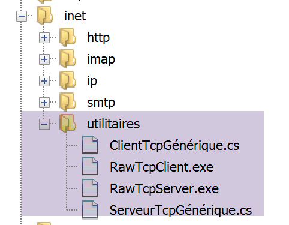
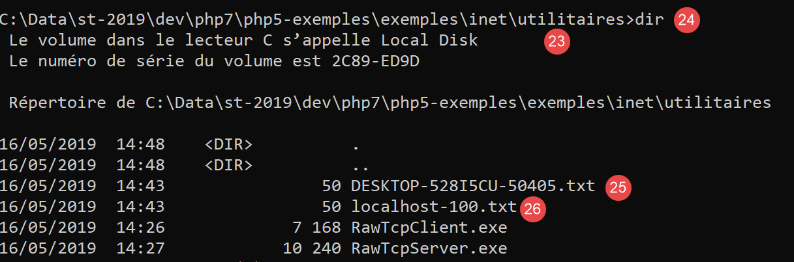
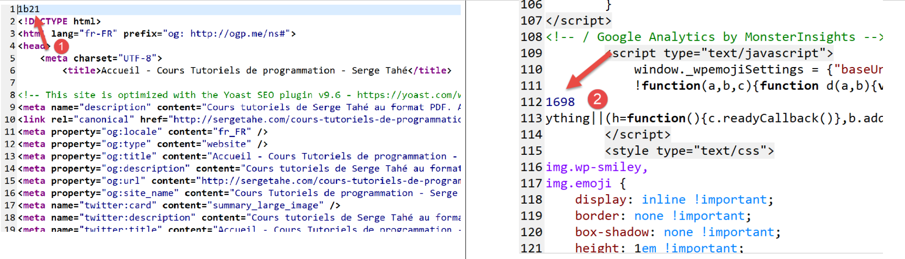
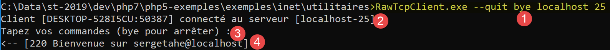
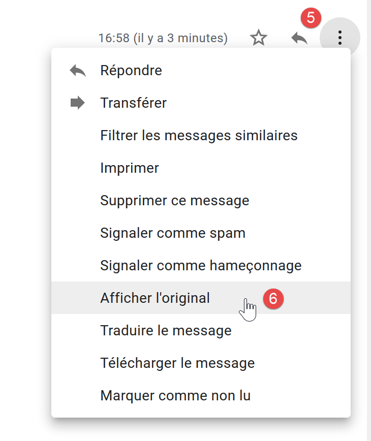
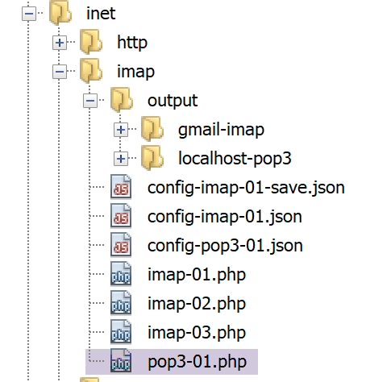
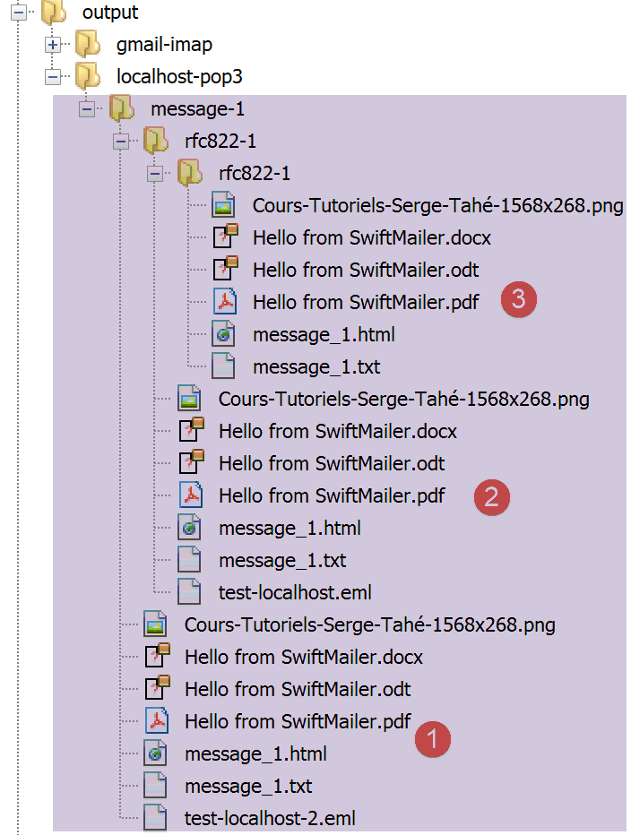

16. 网络功能
接下来我们将介绍PHP的网络功能，这些功能使我们能够进行TCP / IP（传输控制协议 / 互联网协议）的编程。

16.1. 互联网编程基础
16.1.1. 概述
考虑两台远程机器 A 和 B 之间的通信：

当机器 A 上的应用程序 AppA 想要与互联网上的机器 B 上的应用程序 AppB 通信时，它必须知道以下几项信息：
- 机器 B 的 IP 地址（互联网协议）或名称；
- 应用程序 AppB 所使用的端口号。因为机器 B 可能支持许多在互联网上运行的应用程序。当它收到来自网络的信息时，必须知道这些信息是发给哪个应用程序的。 机器B上的应用程序通过称为通信端口的接口访问网络。机器B接收的数据包中包含该信息，以便将其分发给正确的应用程序；
- 机器B所支持的通信协议。在本研究中，我们将仅使用TCP-IP协议；
- AppB应用程序所接受的对话协议。实际上，机器A和机器B将进行“对话”。它们传递的内容将被封装在TCP-IP协议中。 然而，当链路末端的AppB应用程序接收到AppA应用程序发送的信息时，它必须能够对其进行解析。 这类似于两个人 A 和 B 通过电话交流的情况：他们的对话由电话传输。语音将由电话 A 编码为信号，通过电话线传输，到达电话 B 并被解码。 此时，B才能听到对方的说话声。这正是对话协议概念的由来：如果A说的是法语，而B不懂这种语言，A和B就无法进行有效的对话；
因此，两个通信的应用程序必须就将采用的对话类型达成一致。 例如，与服务ftp的对话与服务pop的对话并不相同：这两项服务接受的命令不同。它们采用的是不同的对话协议；
16.1.2. TCP协议的特征
本文仅探讨使用 TCP 传输协议的网络通信，其主要特征如下：
- 希望发送信息的进程首先会与接收该信息的目标进程建立连接。该连接建立在发送端机器的一个端口与接收端机器的一个端口之间。两个端口之间由此形成一条虚拟路径，该路径仅供建立连接的两个进程专属使用；
- 源进程发送的所有数据包均沿此虚拟路径传输，并按发送顺序到达；
- 发送的信息呈现连续性特征。发送进程按自身节奏发送信息。这些信息未必会立即发送：TCP协议会等待积累足够的数据后再进行发送。它们被存储在一个名为TCP段的结构中。 该分段填满后将传输至 IP 层，并在该层封装为 IP 数据包；
- TCP协议发送的每个分段都带有编号。接收方TCP协议会验证是否按顺序接收到了分段。对于每个正确接收的分段，它都会向发送方发送一份确认；
- 当发送方收到该确认后，会通知发送进程。因此，发送进程可以得知该分段已成功送达；
- 如果经过一段时间后，发送了某数据段的 TCP 协议未收到确认，它将重发该数据段，从而保证信息传输服务的质量；
- 在两个通信进程之间建立的虚拟电路是 full-duplex：这意味着信息可以双向传输。 因此，即使源进程仍在发送信息，目标进程也可以发送确认。例如，这使得源协议 TCP 能够发送多个数据段，而无需等待确认。 如果经过一段时间后，它发现尚未收到编号为 n 的某个分段的确认，它将从该点重新开始发送分段；
16.1.3. 客户端-服务器关系
通常，互联网通信是非对称的：机器A发起连接以向机器B请求服务，并明确表示希望与机器B上的服务SB1建立连接。机器B则接受或拒绝该请求。 若B机接受，A机即可向SB1服务发送请求。这些请求必须符合SB1服务所支持的交互协议。 由此，在称为客户端的机器A与称为服务器端的机器B之间建立起一种请求-响应对话。双方中的一方将关闭连接。
16.1.4. 客户端架构
请求服务器应用程序服务的网络程序架构如下：
ouvrir la connexion avec le service SB1 de la machine B
si réussite alors
tant que ce n'est pas fini
préparer une demande
l'émettre vers la machine B
attendre et récupérer la réponse
la traiter
fin tant que
finsi
fermer la connexion
16.1.5. 服务器架构
提供服务的程序架构如下：
ouvrir le service sur la machine locale
tant que le service est ouvert
se mettre à l'écoute des demandes de connexion sur un port dit port d'écoute
lorsqu'il y a une demande, la faire traiter par une autre tâche sur un autre port dit port de service
fin tant que
服务器程序对客户端的初始连接请求与后续获取服务的请求进行区别处理。该程序本身并不提供服务。如果它提供服务，那么在服务期间就无法监听连接请求，客户端将无法获得服务。 因此，它采取了另一种方式：一旦监听端口接收到连接请求并予以接受，服务器就会创建一个任务，负责提供客户端请求的服务。该服务是在服务器机器上的另一个端口（称为服务端口）上提供的。这样就可以同时为多个客户端提供服务。
一个服务任务的结构如下：
tant que le service n'a pas été rendu totalement
attendre une demande sur le port de service
lorsqu'il y en a une, élaborer la réponse
transmettre la réponse via le port de service
fin tant que
libérer le port de service
16.2. 了解互联网通信协议
16.2.1. 简介
当客户端连接到服务器时，双方之间便会建立对话。这种对话的性质构成了所谓的服务器通信协议。互联网中最常见的协议包括以下几种：
- HTTP：超文本传输协议（HTTP）——与Web服务器（HTTP服务器）进行交互的协议；
- SMTP：简单邮件传输协议（SMTP）——用于与电子邮件发送服务器（SMTP服务器）通信的协议；
- POP：邮局协议（POP）——用于与电子邮件存储服务器（服务器 POP）通信的协议。该协议用于检索已接收的电子邮件，而非发送邮件；
- IMAP：互联网邮件访问协议（IMAP）——用于与电子邮件存储服务器（服务器 IMAP）通信的协议。该协议已逐步取代了较早的 POP 协议；
- FTP：文件传输协议（FTP）——用于与文件存储服务器（服务器 FTP）通信的协议；
所有这些协议的共同特点是均为文本行协议：客户端与服务器之间交换的是文本行。如果有一个客户端能够：
- 与 TCP 服务器建立连接；
- 将服务器发送的文本行显示在控制台上；
- 将用户通过键盘输入的文本行发送至服务器；
因此，只要了解该协议的规则，我们就能与采用文本行协议的 TCP 服务器进行交互。
16.2.2. TCP 实用工具

在本文档相关的代码中，包含两个通信实用程序 TCP：
- [RawTcpClient] 用于连接服务器 S 的 P 端口；
- [RawTcpServer] 用于创建一个在端口 P 上等待客户端的服务器；
服务器 TCP [RawTcpServer]使用语法 [RawTcpServeur port] 调用，以在本地机器（您正在使用的计算机）的 [port] 端口上创建 TCP 服务：
- 服务器可同时服务多个客户端；
- 服务器执行用户通过键盘输入的命令。这些命令包括：
- list：列出当前连接到服务器的客户端。这些客户端以 [id=x-nom=y] 的形式显示。字段 [id] 用于标识客户端；
- send x [texte]：向第 x 号客户端（id=x）发送文本。方括号 [] 不会被发送，但它们在命令中是必需的，用于在视觉上区分发送给客户端的文本；
- close x：关闭与第 x 号客户端的连接；
- quit：关闭所有连接并停止服务；
- 客户端发送给服务器的行将显示在控制台上；
- 所有通信记录将保存在名为 [machine-portService.txt] 的文本文件中，其中
- [machine] 是运行该代码的机器名称；
- [port] 是响应客户端请求的服务端口；
客户端 TCP [RawTcpClient] 使用语法 [RawTcpClient serveur port] 调用，以连接到服务器 [serveur] 的端口 [port]：
- 用户通过键盘输入的行被发送至服务器；
- 服务器发送的行显示在控制台上；
- 所有交互内容都会记录在名为 [serveur-port.txt] 的文本文件中；
让我们看一个示例。打开两个 Windows 命令提示符窗口，并在每个窗口中进入实用程序文件夹。在其中一个窗口中，启动端口为 100 的 [RawTcpServer] 服务器：

- 在 [1] 中，我们位于实用程序文件夹内；
- 在 [2] 中，我们启动端口 100 的 TCP 服务器；
- 在 [3] 中，服务器开始等待 TCP 客户端；
- 在 [4] 中，服务器等待用户通过键盘输入的命令；
在另一个命令窗口中，启动客户端 TCP：

- 在 [5] 中，我们位于实用程序文件夹内；
- 在 [6] 中，我们启动客户端 TCP：指示其连接到本地机器（即您正在使用的机器）的 100 端口；
- 在 [7] 中，客户端已成功连接到服务器。这里显示了客户端的详细信息：它位于 [DESKTOP-528I5CU] 机器上（本例中的本地机器），并使用 [50405] 端口与服务器通信：
- 在 [8] 中，客户端正在等待用户通过键盘输入的命令；
让我们回到服务器窗口。其内容已发生变化：

- 在 [9] 中，检测到一个客户端。服务器为其分配了编号 1。服务器正确识别了远程客户端（主机和端口）；
- 在 [10] 中，服务器重新进入等待新客户端的状态；
回到客户端窗口，向服务器发送一条命令：

- 在 [11] 中，向服务器发送了该命令；
回到服务器窗口。其内容已发生变化：

- 在 [12] 中，方括号内的内容是服务器接收到的消息；
向客户端发送响应：

- 变为 [13]，即发送给客户端的响应 1。仅发送方括号内的文本，不发送方括号本身；
回到客户端窗口：

- 在 [14] 中，客户端接收到的响应。接收到的文本是方括号内的内容；
回到服务器窗口查看其他命令：

- 在 [15] 中，我们请求客户端列表；
- 在 [16] 中，响应；
- 在 [17] 中，我们关闭与第 1 号客户端的连接；
- 在 [18] 中，服务器确认；
- 在 [19] 中，我们停止服务器；
- 在 [20] 中，服务器确认；
回到客户端窗口：

- 在 [21] 中，客户端检测到服务结束；
已生成两个日志文件，一个用于服务器，另一个用于客户端：

- 在 [25] 中，服务器日志：文件名即客户端名称 [machine-port]；
- [26]，客户端日志：文件名即为服务器名称 [machine-port]；
服务器日志如下：
客户端日志如下：
16.3. 获取互联网上某台机器的名称或地址 IP

互联网上的机器通常通过地址（IP、IPv4 或 IPv6）或名称进行标识。但最终仅使用地址。 因此，有时需要知道一台通过名称标识的机器的 IP 地址。
脚本 [ip-01.php] 如下：
<?php
// 严格遵守函数参数的声明类型
declare (strict_types=1);
//
// 错误处理
error_reporting(E_ALL & E_STRICT);
ini_set("display_errors", "on");
//
// 常量
$HOTES = array("istia.univ-angers.fr", "www.univ-angers.fr", "www.ibm.com", "localhost", "", "xx");
// IP 的地址和 $HOTES 的机器名称
for ($i = 0; $i < count($HOTES); $i++) {
getIPandName($HOTES[$i]);
}
// 结束
print "Terminé\n";
exit;
//------------------------------------------------
function getIPandName(string $nomMachine): void {
//$nomMachine：要获取其地址 IP 的机器名称
//
// nomMachine-->地址 IP
$ip = gethostbyname($nomMachine);
print "---------------\n";
if ($ip !== $nomMachine) {
print "ip[$nomMachine]=$ip\n";
// 地址 IP --> nomMachine
$name = gethostbyaddr($ip);
if ($name !== $ip) {
print "name[$ip]=$name\n";
} else {
print "Erreur, machine[$ip] non trouvée\n";
}
} else {
print "Erreur, machine[$nomMachine] non trouvée\n";
}
}
注释
- 第 7-8 行：要求 PHP 报告所有错误（E_ALL 和 E_STRICT），并将其显示出来。 仅建议在开发模式下使用此模式，以便利用 PHP 的警告来优化代码。 在生产环境中，第 8 行应设置为“off”。自 PHP 5.4 版本起，E_STRICT 级别已包含在 E_ALL 中；
- 第11行：列出需要获取名称和地址的机器列表 IP；
第21行的getIpandName函数中使用了PHP的网络函数。
- 第25行：gethostbyname($nom)函数用于获取名为$nom的机器的IP地址IP "ip3.ip2.ip1.ip0"。 如果机器 $nom 不存在，该函数将返回 $nom 作为结果；
- 第30行：函数 gethostbyaddr($ip) 用于获取地址为 $ip 的机器名称，其格式为 "ip3.ip2.ip1.ip0"。 如果机器 $ip 不存在，该函数将返回 $ip 作为结果；
结果：
---------------
ip[istia.univ-angers.fr]=193.49.144.41
name[193.49.144.41]=ametys-fo-2.univ-angers.fr
---------------
ip[www.univ-angers.fr]=193.49.144.41
name[193.49.144.41]=ametys-fo-2.univ-angers.fr
---------------
ip[www.ibm.com]=2.18.220.211
name[2.18.220.211]=a2-18-220-211.deploy.static.akamaitechnologies.com
---------------
ip[localhost]=127.0.0.1
name[127.0.0.1]=DESKTOP-528I5CU
---------------
ip[]=192.168.1.38
name[192.168.1.38]=DESKTOP-528I5CU.home
---------------
Erreur, machine[xx] non trouvée
Terminé
16.4. 协议 HTTP（HyperText 传输协议）
16.4.1. 示例 1

当浏览器显示 URL 时，它作为 Web 服务器的客户端，或者换言之，作为 HTTP 服务器的客户端。浏览器主动发起请求，首先向服务器发送若干命令。以第一个示例为例：
- 服务器即 [RawTcpServer] 实用程序；
- 客户端将是一个浏览器；
我们首先在100端口上启动服务器：

然后，我们使用浏览器请求 URL [localhost:100]，也就是说，我们指定被请求的 HTTP 服务器运行在本地机器的 100 端口上：

让我们回到服务器窗口：

- 在 [3] 中，连接的客户端；
- 在 [4-7] 中，是它发送的一系列文本行：
- 在 [4]：该行格式为 [GET URL HTTP/1.1]。它请求 URL / 并要求服务器使用 HTTP 1.1 协议；
- 在 [5] 中：该行格式为 [Host: serveur:port]。命令 [Host] 的大小写不区分。在此重申，客户端正在查询运行在 100 端口的本地服务器；
- 命令 [User-Agent] 提供客户端的标识；
- 命令 [Accept] 指定客户端接受的文档类型；
- 命令 [Accept-Language] 指定若文档存在多种语言版本，则希望获取哪种语言的文档；
- 命令 [Connection] 指定所需的连接模式：[keep-alive] 表示连接应保持直至数据交换结束；
- 在 [7] 中：客户端以空行结束其命令；
我们通过关闭服务器来终止连接：

16.4.2. 示例 2
既然我们已经了解了浏览器发送的用于请求 URL 的命令，接下来我们将使用我们的客户端 TCP [RawTcpClient] 来请求该 URL。 Laragon中的Apache服务器将作为我们的Web服务器。
启动 Laragon，然后启动 Apache Web 服务器：


现在，我们使用浏览器访问 URL 和 [http://localhost:80]。 这里我们仅指定了服务器 [localhost:80]，而未指定任何文档 URL。在这种情况下，请求的是 URL /，即 Web 服务器的根目录：

- 转换为 [1]，即请求的 URL。最初输入的是 [http://localhost:80]，而浏览器 （此处为 Firefox）将其简单转换为 [localhost]，因为未指定协议时默认使用 [http] 协议，未指定端口时默认使用 [80] 端口；
- 在 [2] 中，即被请求的 Web 服务器的根页面 /；
现在，让我们查看浏览器接收到的文本：

- 右键点击收到的页面，选择 [2] 选项。将获得以下源代码：
<!DOCTYPE HTML>
<HTML>
<head>
<title>Laragon</title>
<link href="https://fonts.googleapis.com/css?family=Karla:400" rel="stylesheet" type="text/css">
<style>
HTML, body {
height: 100%;
}
body {
margin: 0;
padding: 0;
width: 100%;
display: table;
font-weight: 100;
font-family: 'Karla';
}
.container {
text-align: center;
display: table-cell;
vertical-align: middle;
}
.content {
text-align: center;
display: inline-block;
}
.title {
font-size: 96px;
}
.opt {
margin-top: 30px;
}
.opt a {
text-decoration: none;
font-size: 150%;
}
a:hover {
color: red;
}
</style>
</head>
<body>
<div class="container">
<div class="content">
<div class="title" title="Laragon">Laragon</div>
<div class="info"><br />
Apache/2.4.35 (Win64) OpenSSL/1.1.0i PHP/7.2.11<br />
PHP version: 7.2.11 <span><a title="phpinfo()" href="/?q=info">info</a></span><br />
Document Root: C:/myprograms/laragon-lite/www<br />
</div>
<div class="opt">
<div><a title="Getting Started" href="https://laragon.org/docs">Getting Started</a></div>
</div>
</div>
</div>
</body>
</HTML>
现在，让我们使用我们的客户端 TCP 请求 URL 和 [http://localhost:80]：

- 在 [1] 中，我们连接到 localhost 服务器的 80 端口。Laragon 的 Web 服务器就在此运行；
现在，我们输入上一段中发现的命令：

- 在 [1] 上，输入命令 [GET]。我们请求 Web 服务器的根目录 /；
- 在 [2] 中，对应命令为 [Host]；
- 这是仅有的两个必不可少的命令。对于其他命令，Web 服务器将采用默认值；
- 在 [3] 中，空行用于结束客户端的命令；
- 第 3 行之后是 Web 服务器的响应；
- 从 [4] 到空行 [5] 之间是服务器响应的标头 HTTP；
- 在 [5] 行之后，是请求的文档 HTML（请求 ID 为 [6]）；
我们输入 [quit] 来结束客户端连接，并加载日志文件 [localhost-80.txt]：
- 第 11-79 行：接收到的文档 HTML。在前面的示例中，Firefox 也接收到了相同的文档；
现在我们已具备编写 TCP 客户端的基础，该客户端将请求 URL。
16.4.3. 示例 3

脚本 [http-01.php] 是一个由文件 jSON [config-http-01.json] 配置的 HTTP 客户端。该文件的内容如下：
- 第 2 行：要访问的 Web 服务器所在主机的名称；
- 第 3 行：该 Web 服务器的运行端口；
- 第 4 行：所需文档的 URL 文件名；
- 第5行：目标主机，格式为“主机:端口”；
- 第6行：客户端标识HTTP：可自定义；
- 第7行：客户端支持的文档类型，此处为文本 HTML；
- 第8行：请求文档所需的语言；
- 第9行：客户端发送的命令的换行符：根据服务器所在的操作系统不同，该换行符可能有所差异（Unix系统为\n，Windows系统为\r\n）；
脚本 [http-01.php] 如下：
<?php
// 严格遵守函数参数的声明类型
declare (strict_types=1);
//
// 错误处理
// error_reporting(E_ALL & E_STRICT);
// ini_set("display_errors", "on");
//
// 常量
const CONFIG_FILE_NAME = "config-http-01.json";
//
// 获取配置
$config = \json_decode(\file_get_contents(CONFIG_FILE_NAME), true);
// 从配置文件中获取 HTML 的 URL 文本
foreach ($config as $site => $protocole) {
// 读取网站首页 $ite
$résultat = getURL($site, $protocole);
// 显示结果
print "$résultat\n";
}//用于
// 结束
exit;
//-----------------------------------------------------------------------
function getURL(string $site, array $protocole, $suivi = TRUE): string {
// 读取 $siteURL 并将其存储在 $site.HTML 文件中
// 客户端/服务器对话遵循 $protocole 协议
//
// 在 $site 端口上建立连接
$erreurNumber = 0;
$erreur = "";
$connexion = fsockopen($site, $protocole["port"], $erreurNumber, $erreur);
// 若发生错误则返回
if ($connexion === FALSE) {
return "Echec de la connexion au site (" . $site . " ," . $protocole["port"] . " : $erreur";
}
// $connexion 代表双向通信流
// 在客户端（本程序）与所连接的Web服务器之间
// 该通道用于交换命令和信息
// 对话协议为 HTTP
//
// 创建文件 $site.HTML
$HTML = fopen("output/$site.HTML", "w");
if ($HTML === FALSE) {
// 关闭客户端/服务器连接
fclose($connexion);
// 返回错误
return "Erreur lors de la création du fichier $site.HTML";
}
// 客户端将与服务器建立对话 HTTP
if ($suivi) {
print "Client : début de la communication avec le serveur [$site] ----------------------------\n";
}
// 根据服务器的要求，客户端的行必须以 \n 或 \r\n 结尾
$endOfLine = $protocole["endOfLine"];
// 为简化起见，不测试客户端/服务器通信中的错误情况
// 客户端发送命令 GET 以请求 URL $protocole["GET"]
// 语法 GET URL HTTP/1.1
$commande = "GET " . $protocole["GET"] . " HTTP/1.1$endOfLine";
// 跟踪？
if ($suivi) {
print "--> $commande";
}
// 将命令发送至服务器
fputs($connexion, $commande);
// 发送其他标头 HTTP
foreach ($protocole as $verb => $value) {
if ($verb !== "GET" && $verb != "port"" && $verb !="endOfLine") {
// 构建命令
$commande = "$verb: $value$endOfLine";
// 后续？
if ($suivi) {
print "--> $commande";
}
// 将命令发送至服务器
fputs($connexion, $commande);
}
}
// HTTP 协议的头部（headers）必须以空行结尾
fputs($connexion, $endOfLine);
//
// 服务器现在将在通道 $connexion 上响应。它将发送所有
// 数据，然后关闭通道。因此，客户端会读取来自 $connexion
// 直到通道关闭
//
// 首先读取服务器发送的头部信息 HTTP
// 这些头部信息同样以空行结尾
if ($suivi) {
print "Réponse du serveur [$site] ----------------------------\n";
}
$fini = FALSE;
while (!$fini && $ligne = fgets($connexion, 1000)) {
// 是否有空行？
$champs = [];
preg_match("/^(.*?)\s+$/", $ligne, $champs);
if ($champs[1] !== "") {
if ($suivi) {
// 显示 HTTP 头部
print "<-- " . $champs[1] . "\n";
}
} else {
// 这是空行——HTTP 头部已结束
$fini = TRUE;
}
}
// 读取紧随空行之后的文档 HTML
while ($ligne = fgets($connexion, 1000)) {
// 将该行存储在网站的 HTML 文件中
fputs($HTML, $ligne);
}
// 服务器已关闭连接 - 客户端也随之关闭连接
fclose($connexion);
// 关闭文件 $HTML
fclose($HTML);
// 返回
return "Fin de la communication avec le site [$site]. Vérifiez le fichier [$site.HTML]";
}
代码注释：
- 第 14 行：利用配置文件创建字典：
- 字典的键是待查询的Web服务器；
- 其值用于设定应遵循的 HTTP 协议；
- 第16-21行：遍历配置文件中的Web服务器列表；
- 第26行：函数 getURL($site,$protocole,$suivi) 请求 $site 网站上的文档，并将其存储在文本文件 $site 中。HTML.Par 默认情况下，客户端/服务器通信会记录在控制台（$suivi=TRUE）；
- 第 33 行：fsockopen($site,$port,$errNumber,$erreur) 函数用于与运行在 $site 机器的 $port 端口上的 TCP / IP 服务建立连接。 如果连接失败，[$errNumber] 是错误代码，[$erreur] 是相关的错误消息。 一旦客户端/服务器连接建立，许多 TCP / IP 服务会交换文本行。此处的情况正是 HTTP 协议（HyperText 传输协议）。 此时，从服务器发往客户端的数据流可被视为通过 [fgets] 读取的文本文件。同样，从客户端发往服务器的数据流也可通过 [fputs] 进行写入；
- 第44-50行：创建文件[$site.HTML]，用于存储接收到的文档HTML；
- 第60行：客户端的第一个命令必须是[GET URL HTTP/1.1]；
- 第66行：函数fputs允许客户端向服务器发送数据。此处发送的文本行含义如下：“我想要（GET）当前连接的网站上的页面[URL]。 我使用的是 HTTP 协议 1.1 版"；
- 第68-79行：发送HTTP [Host, User-Agent, Accept, Accept-Language]协议的其他行。这些行的顺序无关紧要；
- 第81行：向服务器发送空行，表示客户端已发送完HTTP头部，现在正在等待所请求的文档；
- 第 92-106 行：服务器首先将发送一系列 HTTP 头部，提供有关所请求文档的各种信息。这些头部以空行结束；
- 第 93 行：使用 PHP [fgets] 函数读取服务器发送的一行；
- 第 96 行：提取该行的正文内容，并去除行尾的空格（包括空白字符和换行符）；
- 第 97 行：检查是否已获取标记服务器发送的 HTTP 头部结束的空行；
- 第98-101行：若处于[suivi]模式，则将接收到的HTTP标头显示在控制台上；
- 第 108-111 行：服务器响应中的文本行可通过循环逐行读取，并保存到文本文件中。 当Web服务器发送完所请求的整个页面后，它将关闭与客户端的连接。在客户端，这将被检测为文件结束；
结果：
控制台显示以下日志：
Client : début de la communication avec le serveur [localhost] ----------------------------
--> GET / HTTP/1.1
--> Host: localhost:80
--> User-Agent: client PHP
--> Accept: text/HTML
--> Accept-Language: fr
Réponse du serveur [localhost] ----------------------------
<-- HTTP/1.1 200 OK
<-- Date: Thu, 16 May 2019 15:43:18 GMT
<-- Server: Apache/2.4.35 (Win64) OpenSSL/1.1.0i PHP/7.2.11
<-- X-Powered-By: PHP/7.2.11
<-- Content-Length: 1781
<-- Content-Type: text/HTML; charset=UTF-8
Fin de la communication avec le site [localhost]. Vérifiez le fichier [localhost.HTML]
在本示例中，接收到的 [output/localhost.HTML] 文件内容如下：
<!DOCTYPE HTML>
<HTML>
<head>
<title>Laragon</title>
<link href="https://fonts.googleapis.com/css?family=Karla:400" rel="stylesheet" type="text/css">
<style>
HTML, body {
height: 100%;
}
body {
margin: 0;
padding: 0;
width: 100%;
display: table;
font-weight: 100;
font-family: 'Karla';
}
.container {
text-align: center;
display: table-cell;
vertical-align: middle;
}
.content {
text-align: center;
display: inline-block;
}
.title {
font-size: 96px;
}
.opt {
margin-top: 30px;
}
.opt a {
text-decoration: none;
font-size: 150%;
}
a:hover {
color: red;
}
</style>
</head>
<body>
<div class="container">
<div class="content">
<div class="title" title="Laragon">Laragon</div>
<div class="info"><br />
Apache/2.4.35 (Win64) OpenSSL/1.1.0i PHP/7.2.11<br />
PHP version: 7.2.11 <span><a title="phpinfo()" href="/?q=info">info</a></span><br />
Document Root: C:/myprograms/laragon-lite/www<br />
</div>
<div class="opt">
<div><a title="Getting Started" href="https://laragon.org/docs">Getting Started</a></div>
</div>
</div>
</div>
</body>
</HTML>
我们确实获得了与Firefox浏览器相同的文档。
16.4.4. 示例 4
在此示例中，我们将证明我们编写的客户端 HTTP 存在不足。请按以下方式修改配置文件 [config-http-01.json]：
在此，我们将请求 URL 和 [http://tahe.developpez.com:443/]。[tahe.developpez.com] 机器的 443 端口是用于安全 HTTP 协议（即 HTTPS）的端口。 在此协议中，客户端与服务器的交互始于确保连接安全的初始信息交换。此时客户端必须使用 [HTTPS] 协议而非 [HTTP] 协议，而我们的客户端并未如此操作。
使用此配置文件时，控制台显示的结果如下：
Client : début de la communication avec le serveur [tahe.developpez.com] ----------------------------
--> GET / HTTP/1.1
--> Host: sergetahe.com:443
--> User-Agent: script PHP 7
--> Accept: text/HTML
--> Accept-Language: fr
Réponse du serveur [tahe.developpez.com] ----------------------------
<-- HTTP/1.1 400 Bad Request
<-- Date: Fri, 17 May 2019 13:02:26 GMT
<-- Server: Apache/2.4.25 (Debian)
<-- Content-Length: 454
<-- Connection: close
<-- Content-Type: text/HTML; charset=iso-8859-1
Fin de la communication avec le site [tahe.developpez.com]. Vérifiez le fichier [output/tahe.developpez.com.HTML]
- 第 8 行：服务器 [tahe.developpez.com] 响应称客户端的请求不正确；
此时文件 [output/tahe.developpez.com.HTML] 的内容如下：
<!DOCTYPE HTML PUBLIC "-//IETF//DTD HTML 2.0//EN">
<HTML><head>
<title>400 Bad Request</title>
</head><body>
<h1>Bad Request</h1>
<p>Your browser sent a request that this server could not understand.<br />
Reason: You're speaking plain HTTP to an SSL-enabled server port.<br />
Instead use the HTTPS scheme to access this URL, please.<br />
</p>
<hr>
<address>Apache/2.4.25 (Debian) Server at 2eurocents.developpez.com Port 443</address>
</body></HTML>
服务器明确指出我们未使用正确的协议。
现在，让我们使用以下配置文件：
此时控制台输出结果如下：
Client : début de la communication avec le serveur [sergetahe.com] ----------------------------
--> GET /cours-tutoriels-de-programmation/ HTTP/1.1
--> Host: sergetahe.com:80
--> User-Agent: script PHP 7
--> Accept: text/HTML
--> Accept-Language: fr
Réponse du serveur [sergetahe.com] ----------------------------
<-- HTTP/1.1 200 OK
<-- Date: Fri, 17 May 2019 13:36:06 GMT
<-- Content-Type: text/HTML; charset=UTF-8
<-- Transfer-Encoding: chunked
<-- Server: Apache
<-- X-Powered-By: PHP/7.0
<-- Vary: Accept-Encoding
<-- Set-Cookie: SERVERID68971=2621207|XN64y|XN64y; path=/
<-- Cache-control: private
<-- X-IPLB-Instance: 17106
Fin de la communication avec le site [sergetahe.com]. Vérifiez le fichier [output/sergetahe.com.HTML]
- 第 11 行表明服务器以分块形式发送文档；
这体现在发送给客户端的数据流中出现了数字：每个数字都告诉客户端，服务器即将发送的下一段数据包含多少个字符。在文件 [output/sergetahe.com.HTML] 中，结果如下：

- 在 [1] 和 [2] 中，分别表示文档第 1 和第 2 个片段的十六进制大小；
一个正常的 HTTP 客户端不应将这些数字保留在最终的 HTML 文档中。
以下是另一个示例：
它与前一个示例相似，但第 4 行请求的 URL 没有以 / 字符结尾。这两个 URL 并不相同。运行 HTTP 客户端后，控制台显示以下结果：
Client : début de la communication avec le serveur [sergetahe.com] ----------------------------
--> GET /cours-tutoriels-de-programmation HTTP/1.1
--> Host: sergetahe.com:80
--> User-Agent: script PHP 7
--> Accept: text/HTML
--> Accept-Language: fr
Réponse du serveur [sergetahe.com] ----------------------------
<-- HTTP/1.1 301 Moved Permanently
<-- Date: Fri, 17 May 2019 13:47:00 GMT
<-- Content-Type: text/HTML; charset=iso-8859-1
<-- Content-Length: 262
<-- Server: Apache
<-- Location: http://sergetahe.com:80/编程教程/
<-- Set-Cookie: SERVERID68971=2621207|XN67V|XN67V; path=/
<-- Cache-control: private
<-- X-IPLB-Instance: 17095
Fin de la communication avec le site [sergetahe.com]. Vérifiez le fichier [output/sergetahe.com.HTML]
- 第 8 行表明请求的文档已更改为 URL。第 13 行给出了新的 URL。请注意，这次新的 URL 以字符 / 结尾；
因此，文件 [output/serge.tahe.com.HTML] 如下所示：
<!DOCTYPE HTML PUBLIC "-//IETF//DTD HTML 2.0//EN">
<HTML><head>
<title>301 Moved Permanently</title>
</head><body>
<h1>Moved Permanently</h1>
<p>The document has moved <a href="http://sergetahe.com/cours-tutoriels-de-programmation/">here</a>.</p>
</body></HTML>
客户端 HTTP 应该能够跟随重定向。在此情况下，它应自动重新请求新文件 URL [http://sergetahe.com/cours-tutoriels-de-programmation/]。
16.4.5. 示例 5
前面的示例表明，我们的 HTTP 客户端功能不足。 现在我们将介绍一个名为 [curl] 的工具，它能够通过处理上述难题（如 HTTPS 协议、分块传输的文档、重定向等）来抓取网页文档。[curl] 工具已随 Laragon 一起安装：

打开 Laragon 终端 [1]：

在终端中输入以下命令：

- 其中 [1] 表示控制台类型；
- [2] 表示当前目录。该目录具有特殊性：Laragon 的 Apache 服务器会从这里获取用户请求的文档。因此请避免向该目录写入无关文件；
- 在 [3] 中，显示输入的命令；
命令 [curl --help] 可能会报错。最可能的原因是您的终端类型不正确。此时，请使用命令 [4-6] 打开另一个终端；
命令 [curl --help] 可显示 [curl] 的所有配置选项。这些选项多达数十个。 但我们实际只会用到其中极少数。若要请求 URL，只需输入命令 [curl URL]。该命令将在控制台上显示所请求的文档。 若还想查看客户端与服务器之间的 HTTP 通信记录，则输入 [curl --verbose URL]。最后，若要将请求的 HTML 文档保存到文件中，请输入 [curl --verbose --output fichier URL]。
为避免污染 Laragon 的 [www] 文件夹，请将操作移至文件系统的其他位置：

- 在 [1] 文件中，我们移动到 [c:\temp] 文件夹。如果该文件夹不存在，您可以创建它或选择另一个；
- 在 [2] 目录下，创建一个名为 [curl] 的文件夹；
- 在 [3] 中，将光标定位到该文件夹上；
- 在 [4] 中，列出其内容。该文件夹为空；
请确保 Laragon 的 Apache 服务器已启动，然后在 [curl] 目录下，使用命令 [curl –verbose –output localhost.HTML http://localhost/] 请求 URL 和 [http://localhost/]。结果如下：
c:\Temp\curl
λ curl --verbose --output localhost.HTML http://localhost/
% Total % Received % Xferd Average Speed Time Time Time Current
Dload Upload Total Spent Left Speed
0 0 0 0 0 0 0 0 --:--:-- --:--:-- --:--:-- 0* Trying ::1…
* TCP_NODELAY set
* Connected to localhost (::1) port 80 (#0)
> GET / HTTP/1.1
> Host: localhost
> User-Agent: curl/7.63.0
> Accept: */*
>
< HTTP/1.1 200 OK
< Date: Fri, 17 May 2019 14:32:47 GMT
< Server: Apache/2.4.35 (Win64) OpenSSL/1.1.0i PHP/7.2.11
< X-Powered-By: PHP/7.2.11
< Content-Length: 1781
< Content-Type: text/HTML; charset=UTF-8
<
{ [1781 bytes data]
100 1781 100 1781 0 0 14248 0 --:--:-- --:--:-- --:--:-- 14248
* Connection #0 到主机 localhost 保持不变
- 第 8-12 行：由 [curl] 发送至服务器 [localhost] 的数据行。可识别出 HTTP 协议；
- 第13-19行：服务器发送的响应行；
- 第13行：表明已成功获取所请求的文档；
文件 [localhost.HTML] 包含所请求的文档。您可以通过在文本编辑器中打开该文件进行验证。
现在请求 URL 和 [https://tahe.developpez.com:443/]。 要获取该 URL，客户端 HTTP 必须支持 HTTPS 格式。客户端 [curl] 正是如此。
控制台输出结果如下：
c:\Temp\curl
λ curl --verbose --output tahe.developpez.com.HTML https://tahe.developpez.com:443/
% Total % Received % Xferd Average Speed Time Time Time Current
Dload Upload Total Spent Left Speed
0 0 0 0 0 0 0 0 --:--:-- --:--:-- --:--:-- 0* Trying 87.98.130.52…
* TCP_NODELAY set
* Connected to tahe.developpez.com (87.98.130.52) port 443 (#0)
* ALPN, offering h2
* ALPN, offering http/1.1
* successfully set certificate verify locations:
* CAfile: C:\myprograms\laragon-lite\bin\laragon\utils\curl-ca-bundle.crt
CApath: none
} [5 bytes data]
* TLSv1.3 (OUT), TLS handshake, Client hello (1):
} [512 bytes data]
* TLSv1.3 (IN), TLS handshake, Server hello (2):
{ [108 bytes data]
* TLSv1.2 (IN), TLS handshake, Certificate (11):
{ [2558 bytes data]
* TLSv1.2 (IN), TLS handshake, Server key exchange (12):
{ [333 bytes data]
* TLSv1.2 (IN), TLS handshake, Server finished (14):
{ [4 bytes data]
* TLSv1.2 (OUT), TLS handshake, Client key exchange (16):
} [70 bytes data]
* TLSv1.2 (OUT), TLS change cipher, Change cipher spec (1):
} [1 bytes data]
* TLSv1.2 (OUT), TLS handshake, Finished (20):
} [16 bytes data]
* TLSv1.2 (IN), TLS handshake, Finished (20):
{ [16 bytes data]
* SSL connection using TLSv1.2 / ECDHE-RSA-AES128-GCM-SHA256
* ALPN, server accepted to use http/1.1
* Server certificate:
* subject: CN=*.developpez.com
* start date: Apr 4 08:25:09 2019 GMT
* expire date: Jul 3 08:25:09 2019 GMT
* subjectAltName: host "tahe.developpez.com" matched cert's "*.developpez.com"
* issuer: C=US; O=Let's Encrypt; CN=Let's Encrypt Authority X3
* SSL certificate verify ok.
} [5 bytes data]
> GET / HTTP/1.1
> Host: tahe.developpez.com
> User-Agent: curl/7.63.0
> Accept: */*
>
{ [5 bytes data]
< HTTP/1.1 200 OK
< Date: Fri, 17 May 2019 14:39:41 GMT
< Server: Apache/2.4.25 (Debian)
< X-Powered-By: PHP/5.3.29
< Vary: Accept-Encoding
< Transfer-Encoding: chunked
< Content-Type: text/HTML
<
{ [6 bytes data]
100 96559 0 96559 0 0 163k 0 --:--:-- --:--:-- --:--:-- 163k
* Connection #0 到主机 tahe.developpez.com 保持不变
- 第10-40行：客户端与服务器之间用于建立安全连接的交互：该连接将被加密；
- 第 42-45 行：客户端 [curl] 向服务器发送的 HTTP 请求头；
- 第 48 行：成功找到所请求的文档；
- 第53行：文档以分块形式发送；
[curl] 既正确处理了安全协议 HTTPS，也正确处理了文档分段发送的情况。发送的文档可在此处的 [tahe.developpez.com.HTML] 文件中找到。
现在我们来请求 URL [http://sergetahe.com/cours-tutoriels-de-programmation]。 我们之前看到，对于该 URL，存在一个重定向至 URL [http://sergetahe.com/cours-tutoriels-de-programmation/]（末尾带有 /）的链接。
此时控制台输出如下：
c:\Temp\curl
λ curl --verbose --output sergetahe.com.HTML --location http://sergetahe.com/编程教程
% Total % Received % Xferd Average Speed Time Time Time Current
Dload Upload Total Spent Left Speed
0 0 0 0 0 0 0 0 --:--:-- --:--:-- --:--:-- 0* Trying 87.98.154.146…
* TCP_NODELAY set
* Connected to sergetahe.com (87.98.154.146) port 80 (#0)
> GET /cours-tutoriels-de-programmation HTTP/1.1
> Host: sergetahe.com
> User-Agent: curl/7.63.0
> Accept: */*
>
< HTTP/1.1 301 Moved Permanently
< Date: Fri, 17 May 2019 15:13:03 GMT
< Content-Type: text/HTML; charset=iso-8859-1
< Content-Length: 262
< Server: Apache
< Location: http://sergetahe.com/编程课程与教程/
< Set-Cookie: SERVERID68971=2621207|XN7Pg|XN7Pg; path=/
< Cache-control: private
< X-IPLB-Instance: 17095
<
* Ignoring the response-body
{ [262 bytes data]
100 262 100 262 0 0 1401 0 --:--:-- --:--:-- --:--:-- 1401
* Connection #0 留给主机 sergetahe.com 保持原样
* Issue another request to this URL: 'http://sergetahe.com/编程教程课程/'
* Found bundle for host sergetahe.com: 0x1c88548 [can pipeline]
* Could pipeline, but not asked to!
* Re-using existing connection! (#0) 与主机 sergetahe.com
* Connected to sergetahe.com (87.98.154.146) port 80 (#0)
0 0 0 0 0 0 0 0 --:--:-- --:--:-- --:--:-- 0
> GET /cours-tutoriels-de-programmation/ HTTP/1.1
> Host: sergetahe.com
> User-Agent: curl/7.63.0
> Accept: */*
>
< HTTP/1.1 200 OK
< Date: Fri, 17 May 2019 15:13:04 GMT
< Content-Type: text/HTML; charset=UTF-8
< Transfer-Encoding: chunked
< Server: Apache
< X-Powered-By: PHP/7.0
< Vary: Accept-Encoding
< Set-Cookie: SERVERID68971=2621207|XN7Pg|XN7Pg; path=/
< Cache-control: private
< X-IPLB-Instance: 17095
<
{ [14205 bytes data]
100 43101 0 43101 0 0 78795 0 --:--:-- --:--:-- --:--:-- 168k
* Connection #0 至主机 sergetahe.com 保持不变
- 第 2 行：使用选项 [--location] 表示希望跟随服务器发送的重定向；
- 第 13 行：服务器指出所请求的文档已更改为 URL；
- 第 18 行：它指明了所请求文档的新 URL；
- 第27行：[curl]向新的URL发出新请求；
- 第33行：使用了新的URL；
- 第38行：服务器响应称已找到所请求的文档；
- 第41行：服务器分段发送该文档；
所请求的文档将保存在文件 [sergetahe.com.HTML] 中。
16.4.6. 示例 6
PHP 拥有一个名为 [libcurl] 的扩展，该扩展允许在程序 PHP 中使用工具 [curl] 的功能。 首先需确保在“链接”段落中所述的 [php.ini] 文件中已启用此扩展：

请确保上述第 889 行已取消注释。
我们将编写一个名为 [http-02.php] 的脚本，该脚本将使用以下配置文件 jSON：
字典 [clé, valeur] 中的每个条目具有以下结构：
- clé：Web 服务器的名称；
- valeur 是一个包含以下键的字典：
- timeout：等待服务器响应的最长时限。超过该时限，客户端将断开连接；
- url：所请求文档的 URL；
脚本代码 [http-02.php] 如下：
<?php
// 严格遵守函数参数的声明类型
declare (strict_types=1);
//
// 错误处理
//error_reporting(E_ALL & E_STRICT);
//ini_set("display_errors", "on");
//
// 常量
const CONFIG_FILE_NAME = "config-http-02.json";
//
// 获取配置
$config = \json_decode(\file_get_contents(CONFIG_FILE_NAME), true);
// 从配置文件中获取 URL 的文本
foreach ($config as $site => $infos) {
// 从网站 $ite 读取 URL
$résultat = getUrl($site, $infos["url"], $infos["timeout"]);
// 显示结果
print "$résultat\n";
}//用于
// 结束
exit;
//-----------------------------------------------------------------------
function getUrl(string $site, string $url, int $timeout, $suivi = TRUE): string {
// 读取 URL $url 并将其存储在文件 output/$site.HTML 中
//
// 后续
print "Client : début de la communication avec le serveur [$site] ----------------------------\n";
// 初始化会话 cURL
$curl = curl_init($url);
if ($curl === FALSE) {
// 发生错误
return "Erreur lors de l'initialisation de la session cURL pour le site [$site]";
}
// curl 选项
$options = [
// 详细模式
CURLOPT_VERBOSE => true,
// 新连接 - 无缓存
CURLOPT_FRESH_CONNECT => true,
// 请求超时（以秒为单位）
CURLOPT_TIMEOUT => $timeout,
CURLOPT_CONNECTTIMEOUT => $timeout,
// 不验证证书有效性SSL
CURLOPT_SSL_VERIFYPEER => false,
// 跟随重定向
CURLOPT_FOLLOWLOCATION => true,
// 以字符串形式获取请求的文档
CURLOPT_RETURNTRANSFER => true
];
// curl 配置
curl_setopt_array($curl, $options);
// 执行请求
$page_content = curl_exec($curl);
// 关闭会话cURL
curl_close($curl);
// 处理结果
if ($page_content !== FALSE) {
// 将结果保存到 $site.HTML
$result = file_put_contents("output/$site.HTML", $page_content);
if ($result === FALSE) {
// 返回错误
return "Erreur lors de la création du fichier [output/$site.HTML]";
}
// 成功返回
return "Fin de la communication avec le serveur [$site]. Vérifiez le fichier [output/$site.HTML]";
} else {
// 发生通信错误
return "Erreur de communication avec le serveur [$site]";
}
}
注释
- 第 14 行：利用配置文件创建词典 [$config]；
- 第 17-22 行：遍历配置中找到的网站列表；
- 第 19 行：对于每个网站，调用函数 [getUrl] 以下载URL $infos[«url»] 并设置超时 $infos[«timeout»]；
- 第34行：启动一个会话 [curl]。 [curl_init] 尚未连接到 Web 服务器。它返回一个资源 [$curl]，该资源将作为后续所有函数 [curl] 的参数；
- 第35-38行：若[curl]会话初始化失败，则[curl_init]函数返回布尔值FALSE；
- 第 40-54 行：字典 [$options] 将配置与服务器的连接 [curl]；
- 第 57 行：连接选项被传递给资源 [$curl]；
- 第59行：使用已定义的选项请求连接到URL。由于[CURLOPT_RETURNTRANSFER => true]选项的作用，函数[curl_exec]将服务器发送的文档作为字符串返回。 若连接失败，函数 [curl_exec] 将返回布尔值 FALSE；
- 第 64 行：分析 [curl_exec] 的结果；
- 第 66 行：将接收到的页面保存到本地文件中；
- 第 69、72、75 行：返回函数 [getUrl] 的结果；
执行脚本 [http-02.php] 时，控制台显示以下结果：
* Rebuilt URL to: http://sergetahe.com/
Client : début de la communication avec le serveur [sergetahe.com] ----------------------------
* Trying 87.98.154.146…
* TCP_NODELAY set
* Connected to sergetahe.com (87.98.154.146) port 80 (#0)
> GET / HTTP/1.1
Host: sergetahe.com
Accept: */*
< HTTP/1.1 302 Found
< Date: Sat, 18 May 2019 08:46:38 GMT
< Content-Type: text/HTML; charset=UTF-8
< Transfer-Encoding: chunked
< Server: Apache
< X-Powered-By: PHP/7.0
< Location: http://sergetahe.com/编程教程
< Set-Cookie: SERVERID68971=2621236|XN/Gc|XN/Gc; path=/
< X-IPLB-Instance: 17097
<
* Ignoring the response-body
* Connection #0 至主机 sergetahe.com 保持原样
* Issue another request to this URL: 'http://sergetahe.com/编程课程-教程'
* Found bundle for host sergetahe.com: 0x1fee4ebe090 [can pipeline]
* Re-using existing connection! (#0) 主机为 sergetahe.com
* Connected to sergetahe.com (87.98.154.146) port 80 (#0)
> GET /cours-tutoriels-de-programmation HTTP/1.1
Host: sergetahe.com
Accept: */*
< HTTP/1.1 301 Moved Permanently
< Date: Sat, 18 May 2019 08:46:38 GMT
< Content-Type: text/HTML; charset=iso-8859-1
< Content-Length: 262
< Server: Apache
< Location: http://sergetahe.com/编程课程与教程/
< Set-Cookie: SERVERID68971=2621236|XN/Gc|XN/Gc; path=/
< Cache-control: private
< X-IPLB-Instance: 17097
<
* Ignoring the response-body
* Connection #0 至主机 sergetahe.com 保持不变
* Issue another request to this URL: 'http://sergetahe.com/编程教程课程/'
* Found bundle for host sergetahe.com: 0x1fee4ebe090 [can pipeline]
* Re-using existing connection! (#0) 主机为 sergetahe.com
* Connected to sergetahe.com (87.98.154.146) port 80 (#0)
> GET /cours-tutoriels-de-programmation/ HTTP/1.1
Host: sergetahe.com
Accept: */*
< HTTP/1.1 200 OK
< Date: Sat, 18 May 2019 08:46:39 GMT
< Content-Type: text/HTML; charset=UTF-8
< Transfer-Encoding: chunked
< Server: Apache
< X-Powered-By: PHP/7.0
< Link: <http://sergetahe.com/编程课程与教程/wp-json/>; rel="https://api.w.org/"
< Link: <http://sergetahe.com/编程课程与教程/>; rel=shortlink
< Vary: Accept-Encoding
< Set-Cookie: SERVERID68971=2621236|XN/Gc|XN/Gc; path=/
< Cache-control: private
< X-IPLB-Instance: 17097
<
Fin de la communication avec le serveur [sergetahe.com]. Vérifiez le fichier [output/sergetahe.com.HTML]
Client : début de la communication avec le serveur [tahe.developpez.com] ----------------------------
* Connection #0 保留 sergetahe.com 原样
* Rebuilt URL to: https://tahe.developpez.com/
* Trying 87.98.130.52…
* TCP_NODELAY set
* Connected to tahe.developpez.com (87.98.130.52) port 443 (#0)
* ALPN, offering http/1.1
* successfully set certificate verify locations:
* CAfile: C:\myprograms\laragon-lite\etc\ssl\cacert.pem
CApath: none
* SSL connection using TLSv1.2 / ECDHE-RSA-AES128-GCM-SHA256
* ALPN, server accepted to use http/1.1
* Server certificate:
* subject: CN=*.developpez.com
* start date: Apr 4 08:25:09 2019 GMT
* expire date: Jul 3 08:25:09 2019 GMT
* subjectAltName: host "tahe.developpez.com" matched cert's "*.developpez.com"
* issuer: C=US; O=Let's Encrypt; CN=Let's Encrypt Authority X3
* SSL certificate verify ok.
> GET / HTTP/1.1
Host: tahe.developpez.com
Accept: */*
< HTTP/1.1 200 OK
< Date: Sat, 18 May 2019 08:46:42 GMT
< Server: Apache/2.4.25 (Debian)
< X-Powered-By: PHP/5.3.29
< Vary: Accept-Encoding
< Transfer-Encoding: chunked
< Content-Type: text/HTML
<
Fin de la communication avec le serveur [tahe.developpez.com]. Vérifiez le fichier [output/tahe.developpez.com.HTML]
Client : début de la communication avec le serveur [www.polytech-angers.fr] ----------------------------
* Connection #0 发送到主机 tahe.developpez.com 保持原样
* Rebuilt URL to: http://www.polytech-angers.fr/
* Trying 193.49.144.41…
* TCP_NODELAY set
* Connected to www.polytech-angers.fr (193.49.144.41) port 80 (#0)
> GET / HTTP/1.1
Host: www.polytech-angers.fr
Accept: */*
< HTTP/1.1 301 Moved Permanently
< Date: Sat, 18 May 2019 08:46:45 GMT
< Server: Apache/2.4.29 (Ubuntu)
< Location: http://www.polytech-angers.fr/fr/index.HTML
< Cache-Control: max-age=1
< Expires: Sat, 18 May 2019 08:46:46 GMT
< Content-Length: 339
< Content-Type: text/HTML; charset=iso-8859-1
<
* Ignoring the response-body
* Connection #0 用于托管 www.polytech-angers.fr 保持原样
* Issue another request to this URL: 'http://www.polytech-angers.fr/fr/index.HTML'
* Found bundle for host www.polytech-angers.fr: 0x1fee4ebe390 [can pipeline]
* Re-using existing connection! (#0) 与主机 www.polytech-angers.fr
* Connected to www.polytech-angers.fr (193.49.144.41) port 80 (#0)
> GET /fr/index.HTML HTTP/1.1
Host: www.polytech-angers.fr
Accept: */*
< HTTP/1.1 200
< Date: Sat, 18 May 2019 08:46:46 GMT
< Server: Apache/2.4.29 (Ubuntu)
< X-Cocoon-Version: 2.1.13-dev
< Accept-Ranges: bytes
< Last-Modified: Sat, 18 May 2019 08:01:36 GMT
< Content-Type: text/HTML; charset=UTF-8
< Content-Length: 47372
< Vary: Accept-Encoding
< Cache-Control: max-age=1
< Expires: Sat, 18 May 2019 08:46:47 GMT
< Content-Language: fr
<
* Connection #0 到主机 www.polytech-angers.fr 保持不变
Fin de la communication avec le serveur [www.polytech-angers.fr]. Vérifiez le fichier [output/www.polytech-angers.fr.HTML]
Client : début de la communication avec le serveur [localhost] ----------------------------
* Rebuilt URL to: http://localhost/
* Trying ::1…
* TCP_NODELAY set
* Connected to localhost (::1) port 80 (#0)
> GET / HTTP/1.1
Host: localhost
Accept: */*
< HTTP/1.1 200 OK
< Date: Sat, 18 May 2019 08:46:47 GMT
< Server: Apache/2.4.35 (Win64) OpenSSL/1.1.0i PHP/7.2.11
< X-Powered-By: PHP/7.2.11
< Content-Length: 1781
< Content-Type: text/HTML; charset=UTF-8
<
* Connection #0 指向主机 localhost 保持不变
Fin de la communication avec le serveur [localhost]. Vérifiez le fichier [output/localhost.HTML]
评论
- 得到的交互内容与使用工具 [curl] 时相同；
- 绿色部分为脚本日志；
- 蓝色部分为发送至服务器的命令；
- 黄色部分为客户端收到的响应命令；
16.4.7. 结论
在本节中，我们探讨了 HTTP 协议，并编写了一个 [http-02.php] 脚本，该脚本能够从网络上下载 URL 文件。
16.5. SMTP协议（简单邮件传输协议）
16.5.1. 引言

本章内容：
- [Serveur B] 将作为我们将要安装的本地 SMTP 服务器；
- [Client A] 将作为多种形式的 SMTP 客户端：
- 用于探索 SMTP 协议的 [RawTcpClient] 客户端；
- 脚本 PHP 用于重现客户端 [RawTcpClient] 的协议 SMTP；
- 一个脚本 PHP，使用库 [SwiftMailServer] 来发送各类邮件；
16.5.2. 创建一个 [gmail] 邮箱地址
为了进行 SMTP 的测试，我们需要一个收件邮箱地址。为此，我们将创建一个 Gmail 地址：

- 在 [5] 中，我们创建用户 [php7parlexemple]（请选择其他名称）；
- 在 [6] 处，密码将设置为 [PHP7parlexemple]（请选择其他名称）；
- 在 [7] 中，我们确认这些信息；

- 填写 [9-10] 栏位后确认（11）；
- 接受 Google 的使用条款（12-13），然后确认（14）；
- 在 [15] 中，用户 [PHP7] 的收件箱 (Inbox) (16)；
- 在 [17] 中，该用户的收件箱为空；
- 在 [18-19] 中，登录用户 [php7parlexemple@gmail.com] 的 Google 账户。我们将配置该账户的安全设置；
- 在 [21] 中，允许除 Google 应用以外的其他应用访问 [php7parlexemple] 账户。 如果不这样做，我们的本地邮件服务器 [hMailServer] 将无法与 Gmail 服务器 SMTP 通信；

16.5.3. 安装 SMTP 服务器
在本次测试中，我们将安装邮件服务器 [hMailServer]，该服务器兼具以下功能：作为 SMTP 服务器用于发送邮件， POP3（邮局协议）服务器，用于读取服务器上存储的邮件；以及IMAP（互联网邮件访问协议）服务器，该服务器同样能读取服务器上存储的邮件，但功能更为全面。它特别支持管理服务器上的邮件存储。
邮件服务器 [hMailServer] 已于 2019 年 5 月在 URL 和 [https://www.hmailserver.com/] 上启用。

在安装过程中，系统将要求您提供以下信息：

- 在 [1-2] 中，请同时选择邮件服务器及其管理工具；
- 安装过程中会要求输入管理员密码：请记录下来，因为后续会用到；
[hMailServer] 会作为 Windows 服务安装，并在计算机启动时自动运行。建议选择手动启动：
- 在 [3] 中，在状态栏的输入框中输入 [services]；

- 在 [4-8] 中，将服务设置为 [manuel] 模式 (6)，然后启动它 (7)；
启动后，需配置 [hMailServer] 服务器。该服务器随 [hMailServer Administrator] 管理程序一同安装：

- 在 [2] 中，于状态栏的输入框内输入 [hmailserver]；
- 在 [3] 中，启动管理员；
- 在 [4] 中，将管理员连接到服务器 [hMailServer]；
- 在 [5] 中，输入安装 [hMailServer] 时设置的密码；

我们将创建一个用户账户：
- 右键单击 [Accounts] (7)，然后 (8) 添加新用户；
- 在 [General] 选项卡 (9) 中，我们定义用户 [guest] (10)，密码为 [guest] (11)。 该用户的邮箱地址为 [guest@localhost] (10)；
- 在 [12] 中，用户 [guest] 已被激活；


- 在 [15] 中，配置邮件服务器的 SMTP 协议；
- 在 [16] 中，配置邮件分发；
- 在 [17] 中，配置发往主机（localhost）的邮件分发；
- 在 [18] 中，配置本地主机的名称（localhost）。通过“链接”部分中的脚本可获取该名称；
- 在 [19] 中，配置一个 SMTP 中继服务器：该服务器负责分发非发往本地主机（localhost）的邮件；
- 在 [20] 中，配置了 Gmail 服务器 SMTP。我们选择 Gmail 是因为已在“链接”部分创建了 Gmail 账户；
- 在 [21] 中，指的是 Gmail 的端口 SMTP；
- 在 [22] 中，Gmail 的 SMTP 服务是一项安全服务：访问该服务需要一个 Gmail 账户；
- 在 [23] 中，链接段落中创建的用户 [php7parlexemple]；
- 在 [24] 中，该用户的密码为：[PHP7parlexemple]（在链接段落中创建）；
- 在 [25] 中，指定了 Gmail 使用的安全协议类型；

- 在 [27] 中，该服务的端口为 SMTP；
- 在 [28] 中，该服务无需身份验证；
- 在 [30] 中，填写 SMTP 服务器将发送给其用户的欢迎信息；
16.5.4. SMTP协议

我们将通过以下环境来了解 SMTP 协议：
- 客户端 A 将是通用客户端 TCP（即 [RawTcpClient]）；
- 服务器 B 将是邮件服务器 [hMailServer]；
- 客户端 A 将请求服务器 B 向用户 [php7parlexemple@gmail.com] 发送一封邮件；
- 我们将验证该用户是否已成功收到所发送的邮件；
我们按以下方式启动客户端：

- 在 [1] 中，我们连接到本地机器的 25 号端口，该端口上运行着 [hMailServer] 的 SMTP 服务。 参数 [--quit bye] 表示用户将通过输入命令 [bye] 退出程序。如果没有此参数，程序结束命令为 [quit]。 然而，[quit] 也是 SMTP 协议中的一条命令。因此，我们必须避免这种歧义；
- 在 [2] 中，客户端已成功连接；
- 在 [3] 中，客户端正在等待键盘输入的命令；
- 在 [4] 中，服务器向其发送欢迎信息；

- 在 [5] 中，客户端发送了 [EHLO nom-de-la-machine-client] 命令。 服务器以一系列形式为 [250-xx] 的消息进行响应（6）。代码 [250] 表示客户端发送的命令成功；
- 在 [7] 中，客户端指明了消息的发件人，此处为 [guest@localhost]。该用户必须存在于邮件服务器 [hMailServer] 上。此处情况符合要求，因为我们之前已创建了该用户；
- 在 [8] 中，是服务器的响应；
- 在 [9] 中，指定了邮件的收件人，此处为 Gmail 用户 [php7parlexemple@gmail.com]；
- 在 [10] 中，是服务器的响应；
- 在 [11] 中，命令 [DATA] 告知服务器客户端即将发送消息内容；
- 在 [12] 中，是服务器的响应；
- 在 [13-16] 中，客户端需发送一列文本行，末尾以仅含一个句点的行结束。消息中可包含 [Subject :, From :, To :] (13) 行，分别用于定义消息主题、发件人和收件人；
- 在 [14] 中，上述标题后必须跟一行空行；
- 在 [15] 中，消息正文；
- 在 [16] 中，仅包含一个句点的行，表示消息结束；
- 在 [17] 中，一旦服务器收到仅包含一个点的行，就会将消息放入队列；
- 在 [18] 中，客户端通知服务器已完成；
- 在 [19] 中，显示服务器的响应；
- 在 [20] 中，可以看到服务器已关闭与客户端的连接；
现在我们来验证用户 [php7parlexemple@gmail.com] 是否确实收到了该消息：

- 在 [2] 中，可以看到用户 [php7parlexemple@gmail.com] 已成功收到消息；



- 在 [7] 中，即邮件的发件人。可以看到这并非 [guest@localhost]。这是因为实际发送该消息的是 [hmailServer] 配置中定义的中继服务器。 而该中继服务器是 [smtp.gmail.com]，其关联的 Gmail 用户标识为 [php7parlexemple@gmail.com]。 任何来自 [hMailServer] 的邮件都会显示为来自用户 [php7parlexemple@gmail.com]。这并非我们此处的初衷，但如果不使用该中继服务器， Gmail 的 SMTP 服务会拒绝 [hMailServer] 发送的邮件，因为 Gmail 的 SMTP 要求进行身份验证，而 [hMailServer] 并未发送该验证信息。 虽然肯定有办法绕过这个问题，但我还没找到；
- 在 [8] 中，可以看到邮件是从托管 [hMailServer] 邮件服务器的 [DESKTOP-528I5CU] 机器收到的；
- 在 [9] 中，可见邮件的发件人。可以看出这并非 [guest@localhost]；
- [10] 表示邮件的原始发件人。这次确实是 [guest@localhost]；
- [11]，即主题；
- [12]，收件人；
- 在 [13] 中，是消息；
最终，我们的客户端 [RawTcpClient] 成功发送了消息，尽管发件人信息处理时遇到了一些问题。我们已经掌握了创建一个基于 PHP 编写的 SMTP 客户端的基础。
16.5.5. 基于 PHP 编写的一个基础 SMTP 客户端
我们将把之前从 SMTP 协议中学到的内容应用到 PHP 中。

脚本 [smtp-01.php] 由以下文件 jSON [config-smtp-01.json] 配置：
{
"mail to localhost via localhost": {
"smtp-server": "localhost",
"smtp-port": "25",
"from": "guest@localhost",
"to": "guest@localhost",
"subject": "to localhost via localhost",
"message": "ligne 1\nligne 2\nligne 3"
},
"mail to gmail via localhost": {
"smtp-server": "localhost",
"smtp-port": "25",
"from": "guest@localhost",
"to": "php7parlexemple@gmail.com",
"subject": "to gmail via localhost",
"message": "ligne 1\nligne 2\nligne 3"
},
"mail to gmail via gmail": {
"smtp-server": "smtp.gmail.com",
"smtp-port": "587",
"from": "guest@localhost",
"to": "php7parlexemple@gmail.com",
"subject": "to gmail via gmail",
"message": "ligne 1\nligne 2\nligne 3"
}
}
[config-smtp-01.json] 是一个数组，其中每个元素都是一个 [nom=>infos] 类型的字典。值 [infos] 本身是一个字典，包含以下键值对：
- [smtp-server]：要使用的服务器名称 SMTP；
- [smtp-port]：SMTP服务的端口号；
- [from]：消息的发件人；
- [to]：消息的收件人；
- [subject]：消息主题；
- [message]：待发送的消息；
- 第一个元素使用服务器 SMTP [localhost] 向 [localhost] 的用户发送邮件；
- 第二个元素使用服务器 SMTP [localhost] 向 [Gmail] 上的用户发送邮件；
- 第三个元素使用服务器 SMTP [Gmail] 向 [Gmail] 的用户发送邮件；
客户端 SMTP 的代码 [smtp-01.php] 如下：
<?php
// 客户端 SMTP（SendMail 传输协议），用于发送消息
// SMTP 客户端-服务器通信协议
// -> 客户端连接到 SMTP 服务器的 25 号端口
// <- 服务器向其发送欢迎信息
// -> 客户端发送命令 EHLO 其主机名
// <- 服务器返回 OK 或不响应
// -> 客户端发送命令 MAIL FROM: <发件人>
// <- 服务器是否响应 OK
// -> 客户端发送命令 RCPT TO: <收件人>
// <- 服务器是否响应 OK
// -> 客户端发送命令 DATA
// <- 服务器是否响应 OK
// -> 客户端发送消息中的所有行，并以包含
// 单个字符。
// <- 服务器是否响应 OK
// -> 客户端发送命令 QUIT
// <- 服务器是否响应 OK
// 服务器的响应格式为 xxx 文本，其中 xxx 是一个三位数。所有
// 数字 xxx >=500 表示发生错误。
// 响应可能包含多行，除最后一行外，所有行均以 xxx 开头
// 格式为 xxx(空格)
// 交换的文本行必须以字符 RC(#13) 和 LF(#10) 结尾
//
// SMTP 客户端（SendMail 传输协议），用于发送消息
//
// 错误处理
//ini_set("error_reporting", E_ALL & ~ E_WARNING & ~E_DEPRECATED & ~E_NOTICE);
//ini_set("display_errors", "off");
//
// 严格遵守函数参数的声明类型
declare (strict_types=1);
//
// 邮件发送参数
const CONFIG_FILE_NAME = "config-smtp-01.json";
// 获取配置
$mails = \json_decode(\file_get_contents(CONFIG_FILE_NAME), true);
// 发送邮件
foreach ($mails as $name => $infos) {
// 跟踪
print "Envoi du mail [$name]\n";
// 邮件发送
$résultat = sendmail($name, $infos, TRUE);
// 显示结果
print "$résultat\n";
}//用于
// 结束
exit;
//sendmail
//-----------------------------------------------------------------------
function sendmail(string $name, array $infos, bool $verbose = TRUE): string {
// 发送消息[$name,$infos]。如果 $verbose=TRUE ，则跟踪客户端与服务器的交互
// 获取客户端名称
$client = gethostbyaddr(gethostbyname(""));
// 与服务器建立连接 SMTP
$connexion = fsockopen($infos["smtp-server"], (int) $infos["smtp-port"]);
// 若发生错误则返回
if ($connexion === FALSE) {
return sprintf("Echec de la connexion au site (%s,%s) : %s", $infos["smtp-server"], $infos["smtp-port"]);
}
// $connexion 表示双向通信流
// 在客户端（本程序）与所连接的 SMTP 服务器之间
// 该通道用于交换命令和信息
// 连接建立后，服务器会发送一条欢迎消息，我们读取该消息
$erreur = sendCommand($connexion, "", $verbose, TRUE);
if ($erreur !== "") {
// 关闭连接
fclose($connexion);
// 返回
return $erreur;
}
// 命令EHLO
$erreur = sendCommand($connexion, "EHLO $client", $verbose, TRUE);
if ($erreur !== "") {
// 关闭连接
fclose($connexion);
// 返回
return $erreur;
}
// 命令 MAIL FROM:
$erreur = sendCommand($connexion, sprintf("MAIL FROM: <%s>", $infos["from"]), $verbose, TRUE);
if ($erreur !== "") {
// 关闭连接
fclose($connexion);
// 返回
return $erreur;
}
// 命令 RCPT TO:
$erreur = sendCommand($connexion, sprintf("RCPT TO: <%s>", $infos["to"]), $verbose, TRUE);
if ($erreur !== "") {
// 关闭连接
fclose($connexion);
// 返回
return $erreur;
}
// 命令 DATA
$erreur = sendCommand($connexion, "DATA", $verbose, TRUE);
if ($erreur !== "") {
// 关闭连接
fclose($connexion);
// 返回
return $erreur;
}
// 准备待发送的消息
// 它必须包含以下行
// 发件人：发件人
// 收件人：收件人
// 主题：
// 空行
// 消息
// .
$data = sprintf("From: %s\r\nTo: %s\r\nSubject: %s\r\n\r\n%s\r\n.\r\n", $infos["from"], $infos["to"], $infos["subject"], $infos["message"]);
$erreur = sendCommand($connexion, $data, $verbose, FALSE);
if ($erreur !== "") {
// 关闭连接
fclose($connexion);
// 返回
return $erreur;
}
// 退出命令
$erreur = sendCommand($connexion, "QUIT", $verbose, TRUE);
if ($erreur !== "") {
// 关闭连接
fclose($connexion);
// 返回
return $erreur;
}
// 结束
fclose($connexion);
return "Message envoyé";
}
// --------------------------------------------------------------------------
function sendCommand($connexion, string $commande, bool $verbose, bool $withRCLF): string {
// 将 $commande 发送到频道 $connexion
// 如果 $verbose=1，则启用详细模式
// 如果 $withRCLF=1，则将序列 RCLF 添加到交换中
// 数据
if ($withRCLF) {
$RCLF = "\r\n";
} else {
$RCLF = "";
}
// 若 $commande 不为空，则发送命令
if ($commande!=="") {
fputs($connexion, "$commande$RCLF");
// 可能的回显
if ($verbose) {
affiche($commande, 1);
}
}//if
// 读取响应
$réponse = fgets($connexion, 1000);
// 可能的回显
if ($verbose) {
affiche($réponse, 2);
}
// 获取错误代码
$codeErreur = (int) substr($réponse, 0, 3);
// 是否为响应的最后一行？
while (substr($réponse, 3, 1) === "-") {
// 读取响应
$réponse = fgets($connexion, 1000);
// 可能的回显
if ($verbose) {
affiche($réponse, 2);
}
}//while
// 响应结束
// 服务器返回的错误？
if ($codeErreur >= 500) {
return substr($réponse, 4);
}
// 无错误返回
return "";
}
// --------------------------------------------------------------------------
function affiche($échange, $sens) {
// 在屏幕上显示 $échange
// 如果 $sens=1，则显示 -->$echange
// 如果 $sens=2，则显示 <-- $échange（去除最后两个字符）RCLF
switch ($sens) {
case 1:
print "--> [$échange]\n";
break;
case 2:
$L = strlen($échange);
print "<-- [" . substr($échange, 0, $L - 2) . "]\n";
break;
}//切换
}
注释
- 第 39 行：读取配置文件；
- 第 42 行：遍历数组 [mails] 的元素。 每个元素都是一个字典 [name=>infos]，其中 [name] 是一个任意名称，[infos] 是一个包含发送邮件所需信息的字典；
- 第46行：邮件发送由函数 [sendmail] 负责，该函数接受三个参数：
- $name：本次发送的名称；
- $infos：包含发送所需信息的字典；
- verbose：一个布尔值，用于指示是否应在控制台上记录客户端/服务器通信；
- 第 46 行：函数 [sendmail] 返回一条错误消息，若未发生错误，该消息为空；
- 第 56 行：函数 [sendmail] 发送 SMTP 客户端应发送的各项命令：
- 第 77-84 行：命令 EHLO；
- 第85-92行：命令MAIL FROM: ;
- 第 93-100 行：订单 RCPT TO: ;
- 第101-108行：命令 DATA；
- 第 117-124 行：发送邮件（发件人、收件人、主题、正文）；
- 第125-132行：命令 QUIT；
- 第140行：函数[sendCommand]负责将客户端的命令发送至服务器SMTP。该函数接受四个参数：
- [$connexion]：连接客户端与服务器的连接；
- [$commande]：待发送的命令；
- [$verbose]：若为 TRUE，则将客户端与服务器的交互记录在控制台；
- [$withRCLF]：若为 TRUE，则发送以 \r\n 序列结尾的命令。 对于 SMTP 协议的所有命令，这都是必要的，但 [sendCommand] 也用于发送消息。此时不添加 \r\n 字符序列；
- 第150-157行：将命令发送至服务器；
- 第158-163行：读取响应的第一行。响应可能包含多行。 每行格式均为 XXX-YYY，其中 XXX 是一个数字代码，但响应的最后一行除外，其格式为 XXX YYY（不包含连字符）；
- 第167-174行：读取响应中的所有行；
- 第177行：如果数字代码XXX大于500，则服务器返回了错误；
结果
执行脚本后，控制台显示以下结果：
Envoi du mail [mail to localhost via localhost]
<-- [220 Bienvenue sur sergetahe@localhost]
--> [EHLO DESKTOP-528I5CU.home]
<-- [250-DESKTOP-528I5CU]
<-- [250-SIZE 20480000]
<-- [250-AUTH LOGIN]
<-- [250 HELP]
--> [MAIL FROM: <guest@localhost>]
<-- [250 OK]
--> [RCPT TO: <guest@localhost>]
<-- [250 OK]
--> [DATA]
<-- [354 OK, send.]
--> [From: guest@localhost
To: guest@localhost
Subject: to localhost via localhost
ligne 1
ligne 2
ligne 3
.
]
<-- [250 Queued (0.016 seconds)]
--> [QUIT]
<-- [221 goodbye]
Message envoyé
Envoi du mail [mail to gmail via localhost]
<-- [220 Bienvenue sur sergetahe@localhost]
--> [EHLO DESKTOP-528I5CU.home]
<-- [250-DESKTOP-528I5CU]
<-- [250-SIZE 20480000]
<-- [250-AUTH LOGIN]
<-- [250 HELP]
--> [MAIL FROM: <guest@localhost>]
<-- [250 OK]
--> [RCPT TO: <php7parlexemple@gmail.com>]
<-- [250 OK]
--> [DATA]
<-- [354 OK, send.]
--> [From: guest@localhost
To: php7parlexemple@gmail.com
Subject: to gmail via localhost
ligne 1
ligne 2
ligne 3
.
]
<-- [250 Queued (0.000 seconds)]
--> [QUIT]
<-- [221 goodbye]
Message envoyé
Envoi du mail [mail to gmail via gmail]
<-- [220 smtp.gmail.com ESMTP d9sm21623375wro.26 - gsmtp]
--> [EHLO DESKTOP-528I5CU.home]
<-- [250-smtp.gmail.com at your service, [90.93.230.110]]
<-- [250-SIZE 35882577]
<-- [250-8BITMIME]
<-- [250-STARTTLS]
<-- [250-ENHANCEDSTATUSCODES]
<-- [250-PIPELINING]
<-- [250-CHUNKING]
<-- [250 SMTPUTF8]
--> [MAIL FROM: <guest@localhost>]
<-- [530 5.7.0 Must issue a STARTTLS command first. d9sm21623375wro.26 - gsmtp]
5.7.0 Must issue a STARTTLS command first. d9sm21623375wro.26 - gsmtp
Done.
- 第1-26行：使用服务器SMTP和[hMailServer]向[guest@localhost]发送邮件的过程顺利；
- 第 27-52 行：使用服务器 SMTP [hMailServer] 向 [php7parlexemple@gmail.com] 发送邮件，操作正常；
- 第53-65行：使用服务器SMTP和[Gmail]向[php7parlexemple@gmail.com]发送邮件未成功： 在第65行，服务器SMTP返回了530错误代码及错误信息。该信息指出，客户端SMTP必须先通过安全连接进行身份验证。由于我们的客户端未执行此操作，因此请求被拒绝；
16.5.6. 第二个客户端 SMTP 使用库 [SwiftMailer] 进行通信
前一个客户端至少存在两个缺陷：
- 如果服务器要求使用安全连接，它无法使用；
- 无法在消息中添加附件；
在我们的新脚本中，我们将使用 [SwiftMailer] 和 [https://swiftmailer.symfony.com/] 库（2019年5月版）。 [SwiftMailer]的安装方法详见URL [https://swiftmailer.symfony.com/docs/introduction.HTML]（2019年5月）。
首先启动 Laragon：

- 在 [1] 中，打开终端；

- 在 [3]，确认您位于 [<laragon>/www] 文件夹中，其中 <laragon> 是 Laragon 的安装目录；
- 在 [3] 中，输入指定的命令（2019年5月）。请在 URL 和 [https://swiftmailer.symfony.com/docs/introduction.HTML] 中核对确切的命令；
- 在 [4] 中，提示未进行任何安装或更新。这是因为该库已在此计算机上安装过；
- 在 [5] 中，是 [swiftmailer] 和 [6] 的安装文件夹；
- 在 [7] 中，包含脚本中所需的文件；
完成上述操作后，请确认文件夹 [<laragon>/www/vendor] [5] 确实位于 NetBeans 的 [Include Path] 分支中（参见链接段落）。
最后，[SwiftMailer]库需要PHP和[mbstring]扩展处于激活状态。为此，请检查[php.ini]文件（参见链接段落）：

脚本 [smtp-02.php] 将使用以下配置文件 jSON [config-smtp-02.json]：
该文件包含与 [config-smtp-01.json] 文件相同的字段，并额外增加了两个字段：
- [tls]：在 TRUE 中，该字段表示必须使用安全连接连接到 SMTP 服务器。 若 [tls] 的值为 TRUE，则需添加两个字段：
- [user]：用于验证连接的用户名；
- [password]：其密码；
在本示例中，我们使用了用户 [php7parlexemple@gmail.com] 的凭据来连接 Gmail 服务器。请使用您自己的凭据；
- [attachments]：指定要作为邮件附件的文件名；
脚本代码 [smtp-02.php] 如下：
<?php
// 客户端 SMTP（SendMail 传输协议），用于发送消息
//
// 错误处理
//ini_set("error_reporting", E_ALL & ~ E_WARNING & ~E_DEPRECATED & ~E_NOTICE);
//ini_set("display_errors", "off");
//
// 依赖项
require_once 'C:/myprograms/laragon-lite/www/vendor/autoload.php';
//
// 邮件发送参数
const CONFIG_FILE_NAME = "config-smtp-02.json";
// 获取配置
$mails = \json_decode(\file_get_contents(CONFIG_FILE_NAME), true);
// 发送邮件
foreach ($mails as $name => $infos) {
// 跟踪
print "Envoi du mail [$name]\n";
// 邮件发送
$résultat = sendmail($name, $infos);
// 显示结果
print "$résultat\n";
}//用于
// 结束
exit;
//-----------------------------------------------------------------------
function sendmail($name, $infos) {
// 将 $infos[message] 发送至 SMTP 服务器 $infos[smtp-server]，端口为 $infos[smt-port]
// 如果 $infos[tls] 为真，则使用 TLS 支持
// 邮件由 $infos[from] 发送
// 收件人为 $infos['to']
// 邮件附件为 $info[attachment]
// 该邮件的主题为 $infos[subject]
//
// 消息格式为 HTML
$messageHTML = str_replace("\n", "<br/>", $infos["message"]);
try {
// 创建消息
$message = (new \Swift_Message())
// 邮件主题
->setSubject($infos["subject"])
// 发件人
->setFrom($infos["from"])
// 使用字典的收件人（setTo/setCc/setBcc）
->setTo($infos["to"])
// 消息正文
->setBody($infos["message"])
// HTML版本
->addPart("<b>$messageHTML</b>", 'text/html')
;
// 附件
foreach ($infos["attachments"] as $attachment) {
// 附件路径
$fileName = __DIR__ . $attachment;
// 验证文件是否存在
if (file_exists($fileName)) {
// 将文档附加到消息中
$message->attach(\Swift_Attachment::fromPath($fileName));
} else {
// 错误
print "L'attachement [$fileName] n'existe pas\n";
}
}
// 协议 TLS ？
if ($infos["tls"] === "TRUE") {
// TLS
$transport = (new \Swift_SmtpTransport($infos["smtp-server"], $infos["smtp-port"], 'tls'))
->setUsername($infos["user"])
->setPassword($infos["password"]);
} else {
// 没有 TLS
$transport = (new \Swift_SmtpTransport($infos["smtp-server"], $infos["smtp-port"]));
}
// 发送管理器
$mailer = new \Swift_Mailer($transport);
// 发送消息
$result = $mailer->send($message);
// 结束
return "Message [$name] envoyé";
} catch (\Throwable $ex) {
// 错误
return "Erreur lors de l'envoi du message [$name] : " . $ex->getMessage();
}
}
注释
- 第 10 行：我们加载位于 [<lagagon>/www/vendor] 文件夹中的 [autoload.php] 文件，其中 <laragon> 是 Laragon 的安装目录。 该文件将确保在首次使用 [SwiftMailer] 中的类时，自动加载其类定义文件。这使我们无需为即将使用的 SwiftMailer 中的每个类和接口都创建对应的 [require] 文件；
- 第 32 行：新的 [sendmail] 函数，该函数有两个参数：
- [$name]，用于区分不同的消息；
- [$infos]：向收件人发送消息所需的必要信息；
- 第42行：我们将生成两个版本的消息：一个是纯文本，另一个是HTML格式。在此，我们将换行符替换为HTML代码 <br/>；
- 第45-69行：我们使用类[\SwiftMessage]来定义消息；
- 第 47 行：方法 [SwiftMessage→setSubject] 用于设置消息主题；
- 第 49 行：方法 [SwiftMessage→setFrom] 用于设置消息的发件人；
- 第 51 行：方法 [SwiftMessage→setTo] 用于设置消息的收件人；
- 第 53 行：方法 [SwiftMessage→setBody] 用于设置邮件正文；
- 第 55 行：方法 [SwiftMessage→addPart] 用于指定消息的不同版本，此处为 HTML 格式的消息。当消息存在变体时，邮件阅读器将显示用户首选的变体；
- 第58-69行：方法[SwiftMessage→addAttachment] (64) 用于将文件附加到消息中；
- 第70-79行：定义好待发送的消息后，需确定发送方式。消息的传输模式由类[\Swift_SmtpTransport]定义。 至少需要提供两项信息：服务器 SMTP 的 nom 和 port。 此外还有第三个信息：服务器 SMTP 是否要求进行安全认证？
- 第 73-75 行：实例 [\Swift_SmtpTransport]，用于与服务器 SMTP 建立安全连接；
- 第 78 行：实例 [\Swift_SmtpTransport] 用于与服务器 SMTP 建立非安全连接；
- 第 81 行：由类 [\SwiftMailer] 发送消息。必须向其传递所选的传输模式；
- 第 83 行：消息 [\SwiftMessage] 通过所选的传输方式 [\Swift_SmtpTransport] 发送。如果消息未能发送，方法 [SwiftMailer→send] 将返回布尔值 FALSE；
- 第 86-89 行：一旦出现异常情况，[SwiftMailer] 库将立即抛出异常；
注：需注意库 [SwiftMailer] 中类的命名空间根为 \。为提醒这一点，已明确标注了类 [\SwiftMessage, \Swift_SmtpTransport, \SwiftMailer]；
结果
执行脚本 [smtp-02.php] 时，控制台将显示以下结果：
若查看用户 [php7parlexemple] 的 Gmail 账户，会看到以下内容：

- [1] 为邮件主题；
- [2]，发件人；
- [3]，收件人；
- 在 [4] 中，是邮件正文；
- 在 [5-10] 中，附件；
如果要求查看原始邮件，将获得以下文档：
Return-Path: <php7parlexemple@gmail.com>
Received: from [127.0.0.1] (lfbn-1-11924-110.w90-93.abo.wanadoo.fr. [90.93.230.110])
by smtp.gmail.com with ESMTPSA id e14sm7773816wma.41.2019.05.26.03.11.53
for <php7parlexemple@gmail.com>
(version=TLS1_2 cipher=ECDHE-RSA-AES128-GCM-SHA256 bits=128/128);
Sun, 26 May 2019 03:11:54 -0700 (PDT)
Message-ID: <e613c47a421a66e2cf7f8e319616ec49@swift.generated>
Date: Sun, 26 May 2019 10:11:53 +0000
Subject: test-gmail-via-gmail
From: php7parlexemple@gmail.com
To: php7parlexemple@gmail.com
MIME-Version: 1.0
Content-Type: multipart/mixed; boundary="_=_swift_1558865513_a3a939017128a4cfb867e968bce5df49_=_"
--_=_swift_1558865513_a3a939017128a4cfb867e968bce5df49_=_
Content-Type: multipart/alternative; boundary="_=_swift_1558865513_43c6d2a54065e4917fb06e3327f8d927_=_"
--_=_swift_1558865513_43c6d2a54065e4917fb06e3327f8d927_=_
Content-Type: text/plain; charset=utf-8
Content-Transfer-Encoding: quoted-printable
ligne 1
ligne 2
ligne 3
--_=_swift_1558865513_43c6d2a54065e4917fb06e3327f8d927_=_
Content-Type: text/HTML; charset=utf-8
Content-Transfer-Encoding: quoted-printable
<b>ligne 1<br/>ligne 2<br/>ligne 3</b>
--_=_swift_1558865513_43c6d2a54065e4917fb06e3327f8d927_=_--
--_=_swift_1558865513_a3a939017128a4cfb867e968bce5df49_=_
Content-Type: application/vnd.openxmlformats-officedocument.wordprocessingml.document; name="Hello from SwiftMailer.docx"
Content-Transfer-Encoding: base64
Content-Disposition: attachment; filename="Hello from SwiftMailer.docx"
--_=_swift_1558865513_a3a939017128a4cfb867e968bce5df49_=_
Content-Type: application/pdf; name="Hello from SwiftMailer.pdf"
Content-Transfer-Encoding: base64
Content-Disposition: attachment; filename="Hello from SwiftMailer.pdf"
--_=_swift_1558865513_a3a939017128a4cfb867e968bce5df49_=_
Content-Type: application/vnd.oasis.opendocument.text; name="Hello from SwiftMailer.odt"
Content-Transfer-Encoding: base64
Content-Disposition: attachment; filename="Hello from SwiftMailer.odt"
--_=_swift_1558865513_a3a939017128a4cfb867e968bce5df49_=_
Content-Type: image/png; name="Cours-Tutoriels-Serge-Tahé-1568x268.png"
Content-Transfer-Encoding: base64
Content-Disposition: attachment; filename="Cours-Tutoriels-Serge-Tahé-1568x268.png"
--_=_swift_1558865513_a3a939017128a4cfb867e968bce5df49_=_
Content-Type: message/rfc822; name=test-localhost.eml
Content-Transfer-Encoding: base64
Content-Disposition: attachment; filename=test-localhost.eml
Return-Path: guest@localhost
Received: from [127.0.0.1] (localhost [127.0.0.1]) by DESKTOP-528I5CU with ESMTP ; Sat, 25 May 2019 09:48:23 +0200
Message-ID: <620f4628882b011feebe4faa30b45092@swift.generated>
Date: Sat, 25 May 2019 07:48:22 +0000
Subject: test-localhost
From: guest@localhost
To: guest@localhost
MIME-Version: 1.0
Content-Type: multipart/mixed; boundary="_=_swift_1558770502_c4b808c99c27ded04595bd11f4bad11b_=_"
--_=_swift_1558770502_c4b808c99c27ded04595bd11f4bad11b_=_
Content-Type: multipart/alternative; boundary="_=_swift_1558770503_3561ca315f33bd15ef6556e98db4a5b8_=_"
--_=_swift_1558770503_3561ca315f33bd15ef6556e98db4a5b8_=_
Content-Type: text/plain; charset=utf-8
Content-Transfer-Encoding: quoted-printable
j'ai =C3=A9t=C3=A9 invit=C3=A9 =C3=A0 d=C3=A9je=C3=BBner
--_=_swift_1558770503_3561ca315f33bd15ef6556e98db4a5b8_=_
Content-Type: text/HTML; charset=utf-8
Content-Transfer-Encoding: quoted-printable
<b>j'ai =C3=A9t=C3=A9 invit=C3=A9 =C3=A0 d=C3=A9je=C3=BBner</b>
--_=_swift_1558770503_3561ca315f33bd15ef6556e98db4a5b8_=_--
--_=_swift_1558770502_c4b808c99c27ded04595bd11f4bad11b_=_
Content-Type: application/vnd.openxmlformats-officedocument.wordprocessingml.document; name="Hello from SwiftMailer.docx"
Content-Transfer-Encoding: base64
Content-Disposition: attachment; filename="Hello from SwiftMailer.docx"
--_=_swift_1558770502_c4b808c99c27ded04595bd11f4bad11b_=_
Content-Type: application/pdf; name="Hello from SwiftMailer.pdf"
Content-Transfer-Encoding: base64
Content-Disposition: attachment; filename="Hello from SwiftMailer.pdf"
--_=_swift_1558770502_c4b808c99c27ded04595bd11f4bad11b_=_
Content-Type: application/vnd.oasis.opendocument.text; name="Hello from SwiftMailer.odt"
Content-Transfer-Encoding: base64
Content-Disposition: attachment; filename="Hello from SwiftMailer.odt"
--_=_swift_1558770502_c4b808c99c27ded04595bd11f4bad11b_=_
Content-Type: image/png; name="Cours-Tutoriels-Serge-Tahé-1568x268.png"
Content-Transfer-Encoding: base64
Content-Disposition: attachment; filename="Cours-Tutoriels-Serge-Tahé-1568x268.png"
--_=_swift_1558770502_c4b808c99c27ded04595bd11f4bad11b_=_--
--_=_swift_1558865513_a3a939017128a4cfb867e968bce5df49_=_--
- 第 9 行：主题；
- 第 10 行：发件人；
- 第 11 行：收件人；
- 第13行：消息包含多个部分，由[--_=_swift_xx]标签分隔；
- 第19-24行：纯文本消息；
- 第27-30行：HTML格式的邮件；
- 第34-36行：附件文件[Hello from SwiftMailer.docx]；
- 第 40-42 行：附件文件 [Hello from SwiftMailer.pdf]；
- 第 46-48 行：附件文件 [Hello from SwiftMailer.odt]；
- 第58-60行：附件文件 [Cours-Tutoriels-Serge-Tahé-1568x268.png]；
- 第 58-60 行：附件文件 [test-localhost.eml]；
- 第 62-114 行：附件文件 [test-localhost.eml] 本身是一封邮件，其内容显示在第 62-114 行。可以看出，这封邮件本身还包含附件；
16.6. 协议 POP3（邮局协议）和 IMAP（互联网邮件访问协议）
16.6.1. 简介
要读取存储在邮件服务器中的邮件，有两种协议：
- POP3（邮局协议），历史上首个协议，但如今已鲜少使用；
- IMAP（互联网邮件访问协议），该协议比POP3更新，目前使用最为广泛；
为了了解 POP3 协议，我们将采用以下架构：

- [Serveur B] 将作为本地 POP3 / IMAP 服务器，由邮件服务器 [hMailServer] 实现；
- [Client A] 将作为 POP3 / IMAP 的客户端，表现形式多样：
- 客户端 [RawTcpClient] 用于探索协议 POP3；
- 脚本 PHP 重现客户端 [RawTcpClient] 的协议 POP3；
- 一个脚本 PHP，它使用 PHP 中的库 IMAP，该库既可实现 IMAP 客户端，也可实现 POP3 客户端；
16.6.2. POP3协议简介
首先，我们使用脚本 [smtp-01.php] 向用户 [guest@localhost] 发送一封邮件。 如果您已进行过与该脚本相关的测试，该用户通常应已收到邮件，但我们无法对此进行验证。要向其发送新邮件，请使用如下配置文件 [config-smtp-01.json]：
现在，让我们通过客户端 [RawTcpClient] 查看如何读取用户 [guest@localhost] 的邮箱：
C:\Data\st-2019\dev\php7\php5-exemples\exemples\inet\utilitaires>RawTcpClient --quit bye localhost 110
Client [DESKTOP-528I5CU:55593] connecté au serveur [localhost-110]
Tapez vos commandes (bye pour arrêter) :
<-- [+OK Bienvenue sur sergetahe@localhost]
USER guest@localhost
<-- [+OK Send your password]
PASS guest
<-- [+OK Mailbox locked and ready]
LIST
<-- [+OK 2 messages (610 octets)]
<-- [1 305]
<-- [2 305]
<-- [.]
RETR 1
<-- [+OK 305 octets]
<-- [Return-Path: guest@localhost]
<-- [Received: from DESKTOP-528I5CU.home (localhost [127.0.0.1])]
<-- [ by DESKTOP-528I5CU with ESMTP]
<-- [ ; Tue, 21 May 2019 12:59:11 +0200]
<-- [Message-ID: <1356373A-33C9-4F31-BA43-2B119E128CE3@DESKTOP-528I5CU>]
<-- [From: guest@localhost]
<-- [To: guest@localhost]
<-- [Subject: to localhost via localhost]
<-- []
<-- [ligne 1]
<-- [ligne 2]
<-- [ligne 3]
<-- [.]
DELE 1
<-- [+OK msg deleted]
LIST
<-- [+OK 1 messages (305 octets)]
<-- [2 305]
<-- [.]
DELE 2
<-- [+OK msg deleted]
LIST
<-- [+OK 0 messages (0 octets)]
<-- [.]
QUIT
<-- [+OK POP3 server saying goodbye…]
Perte de la connexion avec le serveur…
- 第 1 行：服务器 POP3 通常使用 110 端口。此处也是如此；
- 第5行：命令[USER]用于指定要读取其邮箱的用户；
- 第7行：命令[PASS]用于设置密码；
- 第9行：命令[LIST]用于查询用户邮箱中的邮件列表；
- 第14行：命令 [RETR] 用于查看指定编号的邮件；
- 第29行：命令[DELE]用于删除指定编号的消息；
- 第40行：命令[QUIT]告知服务器操作已完成；
服务器的响应可能有以下几种形式：
- 以 [+OK] 开头的单行，表示客户端的上一条命令已成功；
- 以 [-ERR] 开头的单行，表示客户端的上一条命令失败；
- 多行响应，其中：
- 第一行以 [+OK] 开头；
- 最后一行仅包含一个句点；
16.6.3. 一个实现 POP3 协议的基本脚本

由于协议 POP3 与协议 SMTP 具有相同的结构，因此脚本 [pop3-01.php] 是脚本 [smtp-01.php] 的移植版本。 它将拥有以下配置文件 [config-pop3-01.json]：
- 第 3-4 行：被查询的 POP3 服务器是本地服务器 [hMailServer]；
- 第5-6行：要读取用户[guest@localhost]的邮箱；
- 第7行：最多读取5封邮件；
脚本 [pop3-01.php] 如下：
<?php
// POP3 客户端（邮局协议），用于读取邮箱中的消息
// 通信协议 POP3 客户端-服务器
// -> 客户端连接到 SMTP 服务器的 110 端口
// <- 服务器向其发送欢迎信息
// -> 客户端发送用户命令 USER
// <- 服务器返回 OK 或不响应
// -> 客户端发送命令 PASS mot_de_passe
// <- 服务器是否响应 OK
// -> 客户端发送命令 LIST
// <- 服务器是否响应 OK
// -> 客户端发送命令 RETR，每封邮件对应一个编号
// <- 服务器返回 OK 或不返回。若返回 OK，则发送所请求邮件的内容
// -> 服务器发送邮件的所有行，并以包含
// 单个字符。
// -> 客户端发送命令 DELE 编号以删除一封邮件
// <- 服务器响应 OK 或不响应
// // -> 客户端发送命令 QUIT 以结束与服务器的对话
// <- 服务器响应 OK 或不响应
// 服务器的响应格式为 +OK 文本 或 -ERR 文本
// 响应可能包含多行。此时最后一行仅由一个句点组成
// 交换的文本行必须以字符 RC(#13) 和 LF(#10) 结尾
//
// POP3 客户端（SendMail 传输协议），用于阅读邮件
//
// 错误管理
//ini_set("error_reporting", E_ALL & ~ E_WARNING & ~E_DEPRECATED & ~E_NOTICE);
//ini_set("display_errors", "off");
//
// 严格遵守函数参数的声明类型
declare (strict_types=1);
//
// 邮件发送参数
const CONFIG_FILE_NAME = "config-pop3-01.json";
// 获取配置
$mailboxes = \json_decode(\file_get_contents(CONFIG_FILE_NAME), true);
// 读取邮箱
foreach ($mailboxes as $name => $infos) {
// 跟踪
print "Lecture de la boîte à lettres [$name]\n";
// 读取邮箱
$résultat = readmail($name, $infos, TRUE);
// 显示结果
print "$résultat\n";
}//用于
// 结束
exit;
//读取邮件
//-----------------------------------------------------------------------
function readmail(string $name, array $infos, bool $verbose = TRUE): string {
// 读取邮箱内容 [$name]
// 导入所有邮件
// 每封邮件在阅读后被删除
// 如果 $verbose=1，则跟踪客户端与服务器的通信
//
// 与服务器建立连接 SMTP
$connexion = fsockopen($infos["server"], (int) $infos["port"]);
// 若发生错误则返回
if ($connexion === FALSE) {
return sprintf("Echec de la connexion au site (%s,%s) : %s", $infos["smtp-server"], $infos["smtp-port"]);
}
// $connexion 表示客户端（本程序）与所联系的 POP3 服务器之间的双向通信流
// 在客户端（本程序）与所连接的 POP3 服务器之间
// 该通道用于交换命令和信息
// 连接建立后，服务器发送一条欢迎消息，我们读取该消息
$erreur = sendCommand($connexion, "", $verbose, TRUE);
if ($erreur !== "") {
// 关闭连接
fclose($connexion);
// 返回
return $erreur;
}
// 命令 USER
$erreur = sendCommand($connexion, "USER {$infos["user"]}", $verbose, TRUE);
if ($erreur !== "") {
// 关闭连接
fclose($connexion);
// 返回
return $erreur;
}
// 命令 PASS
$erreur = sendCommand($connexion, "PASS {$infos["password"]}", $verbose, TRUE);
if ($erreur !== "") {
// 关闭连接
fclose($connexion);
// 返回
return $erreur;
}
// 命令 LIST
$premièreLigne = "";
$erreur = sendCommand($connexion, "LIST", $verbose, TRUE, $premièreLigne);
if ($erreur !== "") {
// 关闭连接
fclose($connexion);
// 返回
return $erreur;
}
// 分析第一行以获取消息数量
$champs = [];
preg_match("/^\+OK (\d+)/", $premièreLigne, $champs);
$nbMessages = (int) $champs[1];
// 遍历消息
$iMessage = 0;
while ($iMessage < $nbMessages && $iMessage < $infos["maxmails"]) {
// 命令 RETR
$erreur = sendCommand($connexion, "RETR " . ($iMessage + 1), $verbose, TRUE);
if ($erreur !== "") {
// 关闭连接
fclose($connexion);
// 返回
return $erreur;
}
// 命令 DELE
$erreur = sendCommand($connexion, "DELE " . ($iMessage + 1), $verbose, TRUE);
if ($erreur !== "") {
// 关闭连接
fclose($connexion);
// 返回
return $erreur;
}
// 下一条消息
$iMessage++;
}
// 命令 QUIT
$erreur = sendCommand($connexion, "QUIT", $verbose, TRUE);
if ($erreur !== "") {
// 关闭连接
fclose($connexion);
// 返回
return $erreur;
}
// 结束
fclose($connexion);
return "Terminé";
}
// --------------------------------------------------------------------------
function sendCommand($connexion, string $commande, bool $verbose, bool $withRCLF, string &$premièreLigne = ""): string {
// 将 $commande 发送到频道 $connexion
// 如果 $verbose=1，则启用详细模式
// 如果 $withRCLF=1，则将序列 RCLF 添加到交换中
// 将响应的第一行放入 [$premièreLigne
// ]
// 数据
if ($withRCLF) {
$RCLF = "\r\n";
} else {
$RCLF = "";
}
// 若 $commande 不为空，则发送命令
if ($commande !== "") {
fputs($connexion, "$commande$RCLF");
// 可能的回显
if ($verbose) {
affiche($commande, 1);
}
}//if
// 读取响应
$réponse = fgets($connexion, 1000);
// 存储第一行
$premièreLigne = $réponse;
// 可能的回显
if ($verbose) {
affiche($réponse, 2);
}
// 获取错误代码
$codeErreur = substr($réponse, 0, 1);
if ($codeErreur === "-") {
// 发生错误
return substr($réponse, 5);
}
// 命令 RETR 和 LIST 的特殊情况，它们的响应包含多行
$commande = substr(strtolower($commande), 0, 4);
if ($commande === "list" || $commande === "retr") {
// 响应的最后一行？
$champs = [];
$match = preg_match("/^\.\s+$/", $réponse, $champs);
while (!$match) {
// 读取响应
$réponse = fgets($connexion, 1000);
// 可能的回显
if ($verbose) {
affiche($réponse, 2);
}
// 解析响应
$champs = [];
$match = preg_match("/^\.\s+$/", $réponse, $champs);
}//while
}
// 无错误返回
return "";
}
// --------------------------------------------------------------------------
function affiche($échange, $sens) {
// 在屏幕上显示 $échange
// 如果 $sens=1，则显示 -->$echange
// 如果 $sens=2 则显示 <-- $échange（去除最后两个字符 RCLF）
switch ($sens) {
case 1:
print "--> [$échange]\n";
break;
case 2:
$L = strlen($échange);
print "<-- [" . substr($échange, 0, $L - 2) . "]\n";
break;
}//切换
}
注释
如前所述，[pop3-01.php] 是我们之前已做过说明的脚本 [smtp-01.php] 的移植版本。这里仅说明主要差异：
- 第 55 行：函数 [readmail] 负责读取邮箱中的邮件。连接该邮箱的凭据存储在字典 [$infos] 中；
- 第61-66行：与服务器POP3建立连接；
- 第71-77行：读取服务器发送的欢迎信息；
- 第78-85行：发送命令[USER]以识别目标用户的身份；
- 第86-93行：发送命令[PASS]以提供该用户的密码；
- 第94-102行：发送命令 [LIST] 以查询该用户邮箱中邮件的数量。
- 第96行：在函数[readmail]的参数中添加参数[$premièreLigne]。在对命令LIST的响应第一行中，服务器会显示该邮箱中有多少封邮件；
- 第104-106行：从响应的第一行获取消息数量；
- 第109-128行：遍历每封邮件。针对每封邮件，发出两条命令：
- RETR i：用于检索第 i 号邮件（第 111-117 行）；
- DELE i：在读取后将其删除（第118-125行）；
- 第129-136行：发送命令[QUIT]，告知服务器操作已完成；
- 第178-194行：对于命令[LIST]和[RETR]，服务器的响应包含多行，最后一行仅由一个句点组成；
结果
运行后，得到以下结果：
Lecture de la boîte à lettres [localhost:110]
<-- [+OK Bienvenue sur sergetahe@localhost]
--> [USER guest@localhost]
<-- [+OK Send your password]
--> [PASS guest]
<-- [+OK Mailbox locked and ready]
--> [LIST]
<-- [+OK 1 messages (305 octets)]
<-- [1 305]
<-- [.]
--> [RETR 1]
<-- [+OK 305 octets]
<-- [Return-Path: guest@localhost]
<-- [Received: from DESKTOP-528I5CU.home (localhost [127.0.0.1])]
<-- [ by DESKTOP-528I5CU with ESMTP]
<-- [ ; Tue, 21 May 2019 14:25:39 +0200]
<-- [Message-ID: <5F912826-F9C4-41B6-BDA7-4A29537781C9@DESKTOP-528I5CU>]
<-- [From: guest@localhost]
<-- [To: guest@localhost]
<-- [Subject: to localhost via localhost]
<-- []
<-- [ligne ]
<-- [ligne ]
<-- [ligne 3]
<-- [.]
--> [DELE 1]
<-- [+OK msg deleted]
--> [QUIT]
<-- [+OK POP3 server saying goodbye…]
Terminé
Done.
这是一个基础的 POP3 客户端，它缺少某些功能：
- 无法与安全的 POP3 服务器进行交互；
- 无法读取消息的附件；
我们将利用 PHP 中的 [imap] 函数来实现第一项功能。
16.6.4. 基于 PHP 的 [imap] 函数实现的 POP3 / IMAP 客户端
首先，我们需要确认我们所使用的 PHP 版本中是否包含 [imap] 函数。 我们打开链接段落中描述的 [php.ini] 文件，并查找提及 [imap] 的行：

第 895 行，请确认 [imap] 扩展名已启用。
脚本 [imap-01.php] 将处理以下文件：jSON [config-imap-01.json]：
文件 [config-imap-01.json] 定义了一个待连接的 IMAP / POP3 服务器数组。每个元素都是一个 [clé:valeur] 结构，其中：
- [clé]：是要联系的服务器。这里有两个：
- [{imap.gmail.com:993/imap/ssl/novalidate-cert}INBOX]：指在993端口上监听的[imap.gmail.com]服务器。客户端/服务器协议为IMAP。 参数 /ssl 表示客户端/服务器通信是安全的。参数 /novalidate-cert 要求客户端不要验证服务器发送的安全证书。最后，服务器 IMAP 管理同一用户的多个邮箱。 通过在服务器 IMAP 的 URL 中指定 INBOX，我们表明关注名为 INBOX 的邮箱，该邮箱通常是接收新邮件的邮箱；
- [{localhost:110/pop3}INBOX]：指代监听110端口的服务器[localhost]。此处的客户端/服务器协议为POP3；
- [valeur]：是一个字典，其中明确了以下几点：
- [imap-server]：服务器名称为 IMAP 或 POP3；
- [imap-port]：服务器端口 IMAP 或 POP3；
- [user]：要读取其邮箱的所有者；
- [password]：其密码；
- [output-dir]：用于保存邮件的文件夹；
- [prefix]：用于保存邮件的文件名将采用 prefixN 的格式，其中 N 代表邮件编号；
- [pop3]：一个布尔值，用于向 TRUE 指示所使用的协议是 POP3。 在这种情况下，读取完一条消息后，该消息将被删除。这是 POP3 服务器的常规工作方式：已读消息不会保存在服务器上；
[imap-01.php]脚本如下：
<?php
// 客户端 IMAP（互联网消息访问协议），用于阅读邮件
//
// 严格遵守函数参数的声明类型
declare (strict_types=1);
// 错误处理
error_reporting(E_ALL & ~ E_WARNING & ~E_DEPRECATED & ~E_NOTICE);
//ini_set("display_errors", "off");
//
//
// 邮件读取参数
const CONFIG_FILE_NAME = "config-imap-01.json";
// 获取配置
$mailboxes = \json_decode(\file_get_contents(CONFIG_FILE_NAME), true);
// 读取邮箱
foreach ($mailboxes as $name => $infos) {
// 跟踪
print "------------Lecture de la boîte à lettres [$name]\n";
// 读取邮箱
readmailbox($name, $infos);
}
// 结束
exit;
//-----------------------------------------------------------------------
function readmailbox(string $name, array $infos): void {
// 尝试连接
$imapResource = imap_open($name, $infos["user"], $infos["password"]);
// 测试函数 imap_open() 的返回值
if (!$imapResource) {
// 失败
print "La connexion au serveur [$name] a échoué : " . imap_last_error() . "\n";
} else {
// 连接建立
print "Connexion établie avec le serveur [$name].\n";
// 邮箱中的邮件总数
$nbmsg = imap_num_msg($imapResource);
print "Il y a [$nbmsg] messages dans la boîte à lettres [$name]\n";
// 当前邮箱中的未读邮件
if ($nbmsg > 0) {
print "Récupération de la liste des messages non lus de la boîte à lettres [$name]\n";
$msgNumbers = imap_search($imapResource, 'UNSEEN');
if ($msgNumbers === FALSE) {
print "Il n'y a pas de nouveaux messages dans la boîte à lettres [$name]\n";
} else {
foreach ($msgNumbers as $msgNumber) {
// 正在检索消息编号 $msgNumber 的信息
$infosMail = imap_headerinfo($imapResource, $msgNumber);
if ($infosMail === FALSE) {
print "Statut du message n° [$msgNumber] de la boîte à lettres [$name] non récupéré : " . imap_last_error() . "\n";
} else {
print "Statut du message n° [$msgNumber] de la boîte à lettres [$name]\n";
print_r($infosMail);
}
// 获取编号为 $msgNumber 的邮件正文
getMailBody($imapResource, $msgNumber, $infos);
// 如果协议为 POP3，则删除该消息
$pop3 = $infos["pop3"];
if ($pop3 !== NULL) {
// 分两步删除该消息
imap_delete($imapResource, $msgNumber);
imap_expunge($imapResource);
}
}
}
}
}
// 关闭连接
$imapClose = imap_close($imapResource);
if (!$imapClose) {
// 失败
print "La fermeture de la connexion a échoué : " . imap_last_error() . "\n";
} else {
// 成功
print "Fermeture de la connexion réussie.\n";
}
}
function getMailBody($imapResource, int $msgNumber, array $infos): void {
// 获取消息正文编号 $msgNumber
$corpsMail = imap_body($imapResource, $msgNumber);
print "Enregistrement du message dans le fichier {$infos["output-dir"]}/{$infos["prefix"]}$msgNumber\n";
// 如有需要则创建文件夹
if (!file_exists($infos["output-dir"])) {
mkdir($infos["output-dir"]);
}
// 保存消息
if (!file_put_contents($infos["output-dir"] . "/" . $infos["prefix"] . $msgNumber, $corpsMail)) {
print "Echec de l'enregistrement\n";
}
}
注释
- 第19-24行：遍历配置文件中找到的所有服务器；
- 第 32 行：函数 [raedmailbox] 读取 [$name] 中指定的邮箱；
- 第32行：建立连接 IMAP；
- 第一个参数是待读取邮箱的 URL IMAP；
- 第二个参数是该邮箱所有者的用户名；
- 第三个参数是其密码；
如果邮箱的URL IMAP包含/ssl参数，则函数[imap_open]负责配置连接的安全性；
- 第 41 行：函数 [imap_num_msg] 可获取该邮箱的总邮件数；
- 第46行：函数[imap_search]用于检索特定邮件。此处我们检索尚未阅读的邮件（UNSEEN）。第二个参数是筛选条件，共有二十余种。 函数 [imap_search] 返回一个邮件编号数组。这些编号有两种形式：序列号或邮件标识符 UID。默认情况下，函数 [imap_search] 返回一个序列号数组。 若添加第三个参数 [SE_UID]，则将返回消息的标识符 UID；
- 第 47 行：如果函数 [imap_search] 未找到任何消息，则返回布尔值 FALSE；
- 第50行：遍历所有未读消息；
- 第52行：消息具有标题，可通过函数[imap_headerinfo]获取。该函数的第二个参数通常是消息序列号。 若需获取特定消息的标识符 UID，则需将第三个参数设为 [FT_UID]；
- 第 53 行：如果函数 [imap_headerinfo] 未能完成任务，则返回布尔值 FALSE。否则，它将返回一个复合对象，该对象可通过第 57 行的函数 [print_r] 进行显示；
- 第60行：在处理完报头后，现在使用函数[imap_body]获取邮件正文。如果该函数无法完成任务，则返回NULL；
- 第 84-87 行：将消息正文保存到本地文件中；
- 第63-68行：若使用的协议为POP3，则删除刚读取的消息：
- 函数 [imap_delete] 将消息标记为“待删除”，但不会立即删除；
- 函数 [imap_expunge] 会物理删除所有已被标记为“待删除”的消息；
- 第74行：关闭与服务器的连接 IMAP。为此使用函数 [imap_close]；
- 第86行：函数[imap_body]允许根据消息编号获取该消息的正文；
运行脚本 [smtp-02.json]，以便 Gmail 用户 [php7parlexemple] 和 [localhost] 用户 [guest] 收到新邮件。 完成上述操作后，运行脚本 [imap-01.php] 来读取他们的邮箱。
控制台输出结果如下：
------------Lecture de la boîte à lettres [{imap.gmail.com:993/imap/ssl/novalidate-cert}INBOX]
Connexion établie avec le serveur [{imap.gmail.com:993/imap/ssl/novalidate-cert}INBOX].
Il y a [27] messages dans la boîte à lettres [{imap.gmail.com:993/imap/ssl/novalidate-cert}INBOX]
Récupération de la liste des messages non lus de la boîte à lettres [{imap.gmail.com:993/imap/ssl/novalidate-cert}INBOX]
Statut du message n° [26] de la boîte à lettres [{imap.gmail.com:993/imap/ssl/novalidate-cert}INBOX]
stdClass Object
(
[date] => Wed, 22 May 2019 10:08:24 +0000
[Date] => Wed, 22 May 2019 10:08:24 +0000
[subject] => test-gmail-via-gmail
[Subject] => test-gmail-via-gmail
[message_id] => <d8405cac62d57bd9c531ea79c146c72d@swift.generated>
[toaddress] => php7parlexemple@gmail.com
[to] => Array
(
[0] => stdClass Object
(
[mailbox] => php7parlexemple
[host] => gmail.com
)
)
[fromaddress] => php7parlexemple@gmail.com
[from] => Array
(
[0] => stdClass Object
(
[mailbox] => php7parlexemple
[host] => gmail.com
)
)
[reply_toaddress] => php7parlexemple@gmail.com
[reply_to] => Array
(
[0] => stdClass Object
(
[mailbox] => php7parlexemple
[host] => gmail.com
)
)
[senderaddress] => php7parlexemple@gmail.com
[sender] => Array
(
[0] => stdClass Object
(
[mailbox] => php7parlexemple
[host] => gmail.com
)
)
[Recent] =>
[Unseen] => U
[Flagged] =>
[Answered] =>
[Deleted] =>
[Draft] =>
[Msgno] => 26
[MailDate] => 22-May-2019 10:08:29 +0000
[Size] => 19086
[udate] => 1558519709
)
Enregistrement du message dans le fichier output/gmail-imap/message-26
Statut du message n° [27] de la boîte à lettres [{imap.gmail.com:993/imap/ssl/novalidate-cert}INBOX]
stdClass Object
(
…
)
Enregistrement du message dans le fichier output/gmail-imap/message-27
Fermeture de la connexion réussie.
------------Lecture de la boîte à lettres [{localhost:110/pop3}]
Connexion établie avec le serveur [{localhost:110/pop3}].
Il y a [1] messages dans la boîte à lettres [{localhost:110/pop3}]
Récupération de la liste des messages non lus de la boîte à lettres [{localhost:110/pop3}]
Statut du message n° [1] de la boîte à lettres [{localhost:110/pop3}]
stdClass Object
(
…
)
Enregistrement du message dans le fichier output/localhost-pop3/message-1
Fermeture de la connexion réussie.
Done.
如果在这些结果显示后立即重新执行脚本 [imap-01.php]，结果如下：
------------Lecture de la boîte à lettres [{imap.gmail.com:993/imap/ssl/novalidate-cert}INBOX]
Connexion établie avec le serveur [{imap.gmail.com:993/imap/ssl/novalidate-cert}INBOX].
Il y a [27] messages dans la boîte à lettres [{imap.gmail.com:993/imap/ssl/novalidate-cert}INBOX]
Récupération de la liste des messages non lus de la boîte à lettres [{imap.gmail.com:993/imap/ssl/novalidate-cert}INBOX]
Il n'y a pas de nouveaux messages dans la boîte à lettres [{imap.gmail.com:993/imap/ssl/novalidate-cert}INBOX]
Fermeture de la connexion réussie.
------------Lecture de la boîte à lettres [{localhost:110/pop3}]
Connexion établie avec le serveur [{localhost:110/pop3}].
Il y a [0] messages dans la boîte à lettres [{localhost:110/pop3}]
Fermeture de la connexion réussie.
- 第 3 行：Gmail 邮箱中的邮件数量保持不变，但已无新的未读邮件（第 5 行）。这表明前一次执行已将已读邮件的状态从“未读”更改为“已读”；
- 第 9 行：用户 [guest@localhost] 的收件箱中已无邮件。这是因为在上一次执行中，[localhost] 上的已读邮件随后被删除；
邮件已保存在本地：

例如，查看Gmail第26封邮件的内容，结果如下：
--_=_swift_1558519704_f31b373d6e416dc88eb4db0e45fb3a95_=_
Content-Type: multipart/alternative;
boundary="_=_swift_1558519706_9bffb48891232e50ab645383ca62242d_=_"
--_=_swift_1558519706_9bffb48891232e50ab645383ca62242d_=_
Content-Type: text/plain; charset=utf-8
Content-Transfer-Encoding: quoted-printable
ligne 1
ligne 2
ligne 3
--_=_swift_1558519706_9bffb48891232e50ab645383ca62242d_=_
Content-Type: text/HTML; charset=utf-8
Content-Transfer-Encoding: quoted-printable
<b>ligne 1<br/>ligne 2<br/>ligne 3</b>
--_=_swift_1558519706_9bffb48891232e50ab645383ca62242d_=_--
--_=_swift_1558519704_f31b373d6e416dc88eb4db0e45fb3a95_=_
Content-Type: application/pdf; name=Hello.pdf
Content-Transfer-Encoding: base64
Content-Disposition: attachment; filename=Hello.pdf
JVBERi0xLjUKJcOkw7zDtsOfCjIgMCBvYmoKPDwvTGVuZ3RoIDMgMCBSL0ZpbHRlci9GbGF0ZURl
Y29kZT4+CnN0cmVhbQp4nHWPuQoCQQyG+3mK1MKMyThHFoaAq7uF3cKAhdh5gIXgNr6+swcWshII
……………………………….…
OTQwODU4RDUzRDVENjU0QzJCNTM3Mjc+IF0KL0RvY0NoZWNrc3VtIC9DMjU3MUY1MUNDRjgwQ0Ex
ODU0OUI0RTQ4NDkwMDM3OAo+PgpzdGFydHhyZWYKMTIzMjYKJSVFT0YK
--_=_swift_1558519704_f31b373d6e416dc88eb4db0e45fb3a95_=_--
- 第 11-13 行：纯文本消息；
- 第19行：邮件正文 HTML；
- 第25行：附件；
让我们尝试改进这个脚本，将不同类型的邮件以及附件分别保存到单独的文件中。
16.6.5. 改进后的 POP3 / IMAP 客户端
在脚本 [imap-01.php] 中，我们将第 i 号消息的正文显示为一个文本文件，其中既包含不同类型的消息，也包含各种附件的编码内容。可以通过获取消息结构来了解这些不同部分。 在脚本 [imap-02.php] 中，我们对函数 [getMailBody] 进行了如下修改：
function getMailBody($imapResource, int $msgNumber, array $infos): void {
// 获取消息结构
$structure=imap_fetchstructure($imapResource, $msgNumber);
// 显示
print_r($structure);
}
- 第 3 行：我们请求消息结构；
- 第 5 行：显示该结构；
目的是了解消息结构中包含的信息，以便了解如何获取其各个部分。在本例中，消息由脚本 [smtp-02.php] 发送，其配置为 [config-smtp-02.json]：
因此，这是一条带有五个附件的消息，被发送至 [guest@localhost]（第 11-15 行）。脚本 [imap-02.php] 采用以下配置 [config-imap-01.json] 执行：
因此，被利用的是 [guest@localhost] 的邮箱（第 5 行）。随后，脚本 [imap-02.php] 显示了由 [smtp-02.php] 发送的消息结构。该结构在控制台显示如下：
stdClass Object
(
[type] => 1
[encoding] => 0
[ifsubtype] => 1
[subtype] => MIXED
[ifdescription] => 0
[ifid] => 0
[bytes] => 253599
[ifdisposition] => 0
[ifdparameters] => 0
[ifparameters] => 1
[parameters] => Array
(
[0] => stdClass Object
(
[attribute] => BOUNDARY
[value] => _=_swift_1558872295_5bc8ee2ca8b3723c0b39ca8bbfbebdeb_=_
)
)
[parts] => Array
(
[0] => stdClass Object
(
[type] => 1
[encoding] => 0
[ifsubtype] => 1
[subtype] => ALTERNATIVE
[ifdescription] => 0
[ifid] => 0
[bytes] => 429
[ifdisposition] => 0
[ifdparameters] => 0
[ifparameters] => 1
[parameters] => Array
(
[0] => stdClass Object
(
[attribute] => BOUNDARY
[value] => _=_swift_1558872296_1e51aae79dfca4e7e0af112489fe8734_=_
)
)
[parts] => Array
(
[0] => stdClass Object
(
[type] => 0
[encoding] => 4
[ifsubtype] => 1
[subtype] => PLAIN
[ifdescription] => 0
[ifid] => 0
[lines] => 3
[bytes] => 27
[ifdisposition] => 0
[ifdparameters] => 0
[ifparameters] => 1
[parameters] => Array
(
[0] => stdClass Object
(
[attribute] => CHARSET
[value] => utf-8
)
)
)
[1] => stdClass Object
(
[type] => 0
[encoding] => 4
[ifsubtype] => 1
[subtype] => HTML
[ifdescription] => 0
[ifid] => 0
[lines] => 1
[bytes] => 40
[ifdisposition] => 0
[ifdparameters] => 0
[ifparameters] => 1
[parameters] => Array
(
[0] => stdClass Object
(
[attribute] => CHARSET
[value] => utf-8
)
)
)
)
)
[1] => stdClass Object
(
[type] => 3
[encoding] => 3
[ifsubtype] => 1
[subtype] => VND.OPENXMLFORMATS-OFFICEDOCUMENT.WORDPROCESSINGML.DOCUMENT
[ifdescription] => 0
[ifid] => 0
[bytes] => 16302
[ifdisposition] => 1
[disposition] => ATTACHMENT
[ifdparameters] => 1
[dparameters] => Array
(
[0] => stdClass Object
(
[attribute] => FILENAME
[value] => Hello from SwiftMailer.docx
)
)
[ifparameters] => 1
[parameters] => Array
(
[0] => stdClass Object
(
[attribute] => NAME
[value] => Hello from SwiftMailer.docx
)
)
)
[2] => stdClass Object
(
[type] => 3
[encoding] => 3
[ifsubtype] => 1
[subtype] => PDF
[ifdescription] => 0
[ifid] => 0
[bytes] => 17514
[ifdisposition] => 1
[disposition] => ATTACHMENT
[ifdparameters] => 1
[dparameters] => Array
(
[0] => stdClass Object
(
[attribute] => FILENAME
[value] => Hello from SwiftMailer.pdf
)
)
[ifparameters] => 1
[parameters] => Array
(
[0] => stdClass Object
(
[attribute] => NAME
[value] => Hello from SwiftMailer.pdf
)
)
)
[3] => stdClass Object
(
…
)
[4] => stdClass Object
(
…
)
[5] => stdClass Object
(
[type] => 2
[encoding] => 3
[ifsubtype] => 1
[subtype] => RFC822
[ifdescription] => 0
[ifid] => 0
[lines] => 1881
[bytes] => 146682
[ifdisposition] => 1
[disposition] => ATTACHMENT
[ifdparameters] => 1
[dparameters] => Array
(
[0] => stdClass Object
(
[attribute] => FILENAME
[value] => test-localhost.eml
)
)
[ifparameters] => 1
[parameters] => Array
(
[0] => stdClass Object
(
[attribute] => NAME
[value] => test-localhost.eml
)
)
[parts] => Array
(
…
)
)
)
)
注释
- 函数 [imap_fetchstructure] 的文档 PHP 说明了该函数返回对象中各个字段的含义：

字段 [type] 的数值含义如下：

字段 [encoding] 的数值含义如下：

由 [imap-01.php] 记录的消息以以下文本开头：
Return-Path: <php7parlexemple@gmail.com>
Received: from [127.0.0.1] (lfbn-1-11924-110.w90-93.abo.wanadoo.fr. [90.93.230.110])
by smtp.gmail.com with ESMTPSA id e14sm7773816wma.41.2019.05.26.03.11.53
for <php7parlexemple@gmail.com>
(version=TLS1_2 cipher=ECDHE-RSA-AES128-GCM-SHA256 bits=128/128);
Sun, 26 May 2019 03:11:54 -0700 (PDT)
Message-ID: <e613c47a421a66e2cf7f8e319616ec49@swift.generated>
Date: Sun, 26 May 2019 10:11:53 +0000
Subject: test-gmail-via-gmail
From: php7parlexemple@gmail.com
To: php7parlexemple@gmail.com
MIME-Version: 1.0
Content-Type: multipart/mixed; boundary="_=_swift_1558865513_a3a939017128a4cfb867e968bce5df49_=_"
--_=_swift_1558865513_a3a939017128a4cfb867e968bce5df49_=_
Content-Type: multipart/alternative; boundary="_=_swift_1558865513_43c6d2a54065e4917fb06e3327f8d927_=_"
--_=_swift_1558865513_43c6d2a54065e4917fb06e3327f8d927_=_
Content-Type: text/plain; charset=utf-8
Content-Transfer-Encoding: quoted-printable
ligne 1
ligne 2
ligne 3
--_=_swift_1558865513_43c6d2a54065e4917fb06e3327f8d927_=_
Content-Type: text/HTML; charset=utf-8
Content-Transfer-Encoding: quoted-printable
<b>ligne 1<br/>ligne 2<br/>ligne 3</b>
--_=_swift_1558865513_43c6d2a54065e4917fb06e3327f8d927_=_--
--_=_swift_1558865513_a3a939017128a4cfb867e968bce5df49_=_
- 第 15 行和第 33 行界定了 [multipart/mixed] 类型的消息（第 m 行）；
- 第 18 行和第 16 行界定了消息的第一部分：明文消息；
- 第26行和第32行界定了消息的第二部分：HTML消息；
我们在 [imap_fetchstructure] 返回的对象中找到了上述消息的各项信息：
stdClass Object
(
[type] => 1
[encoding] => 0
[ifsubtype] => 1
[subtype] => MIXED
[ifdescription] => 0
[ifid] => 0
[bytes] => 253599
[ifdisposition] => 0
[ifdparameters] => 0
[ifparameters] => 1
[parameters] => Array
(
[0] => stdClass Object
(
[attribute] => BOUNDARY
[value] => _=_swift_1558872295_5bc8ee2ca8b3723c0b39ca8bbfbebdeb_=_
)
)
[parts] => Array
(
[0] => stdClass Object
(
[type] => 1
[encoding] => 0
[ifsubtype] => 1
[subtype] => ALTERNATIVE
[ifdescription] => 0
[ifid] => 0
[bytes] => 429
[ifdisposition] => 0
[ifdparameters] => 0
[ifparameters] => 1
[parameters] => Array
(
[0] => stdClass Object
(
[attribute] => BOUNDARY
[value] => _=_swift_1558872296_1e51aae79dfca4e7e0af112489fe8734_=_
)
)
[parts] => Array
(
[0] => stdClass Object
(
[type] => 0
[encoding] => 4
[ifsubtype] => 1
[subtype] => PLAIN
[ifdescription] => 0
[ifid] => 0
[lines] => 3
[bytes] => 27
[ifdisposition] => 0
[ifdparameters] => 0
[ifparameters] => 1
[parameters] => Array
(
[0] => stdClass Object
(
[attribute] => CHARSET
[value] => utf-8
)
)
)
[1] => stdClass Object
(
[type] => 0
[encoding] => 4
[ifsubtype] => 1
[subtype] => HTML
[ifdescription] => 0
[ifid] => 0
[lines] => 1
[bytes] => 40
[ifdisposition] => 0
[ifdparameters] => 0
[ifparameters] => 1
[parameters] => Array
(
[0] => stdClass Object
(
[attribute] => CHARSET
[value] => utf-8
)
)
)
)
)
- 第3行：消息类型为MIME（多用途互联网邮件扩展）[multipart]；
- 第4行：该邮件采用7位编码；
- 第5行：[ifsubtype]=1 表示结构中存在一个 [subtype] 字段；
- 第6行：字段[subtype]指代子类型MIME，此处为类型[mixed]。 因此，文档的类型MIME即为[multipart/mixed]；
- 第7行：[ifdescription]=0 表示结构中不存在字段 [description]；
- 第8行：[ifid]=0 表示结构中不存在字段 [id]；
- 第 10 行：[ifdisposition]=0 表示结构中不存在 [disposition] 字段；
- 第 11 行：[ifdparameters]=0 表示结构中不存在 [dparameters] 字段；
- 第 12 行：[ifparameters]=1 表示结构中存在 [parameters] 字段；
- 第 13 行：字段 [parameters] 描述了消息的参数。此处仅有一个；
- 第15-19行：该对象描述了文本消息的下一行：
这些行用于界定消息范围。在由 [imap-01.php] 检索到的消息中，上述描述的部分对应于第 m 行。属性 [boundary] 不同，因为这些屏幕截图对应的是同一条消息，但发送时间不同；
- 第23行：此处开始消息各部分的结构；
- 第25-45行：该第一部分类型为[multipart/alternative]。它对应于消息正文中的p)行；
- 第47行：该第一部分本身还包含若干子部分；
- 第47-70行：该第一子部分的类型为[text/plain] （第51、54行），采用[ENCQUOTEDPRINTABLE]类型编码（第52行），并具有[charset=utf-8]参数（第66-67行）；
- 第49-72行描述了文本消息的s-x行；
- 第74-99行：描述[multipart/alternative]部分的第二个子部分；
- 第74-99行：该第二子部分类型为[text/HTML]（第76、79行），编码为[ENCQUOTEDPRINTABLE] （第77行），并具有一个[charset=utf-8]参数（第89-93行）；
- 第74-99行描述了文本消息中的aa-ad行；
[multipart/alternative]部分现已结束。接下来是[application/vnd.openxmlformats-officedocument.wordprocessingml.document]部分，其描述如下：
同样，这些信息可在函数 [imap_fetchstructure] 返回的对象中找到：
[1] => stdClass Object
(
[type] => 3
[encoding] => 3
[ifsubtype] => 1
[subtype] => VND.OPENXMLFORMATS-OFFICEDOCUMENT.WORDPROCESSINGML.DOCUMENT
[ifdescription] => 0
[ifid] => 0
[bytes] => 16302
[ifdisposition] => 1
[disposition] => ATTACHMENT
[ifdparameters] => 1
[dparameters] => Array
(
[0] => stdClass Object
(
[attribute] => FILENAME
[value] => Hello from SwiftMailer.docx
)
)
[ifparameters] => 1
[parameters] => Array
(
[0] => stdClass Object
(
[attribute] => NAME
[value] => Hello from SwiftMailer.docx
)
)
)
- 第 1 行：这是整体消息的第二部分。需要提醒的是，第一部分的类型为 [multipart/alternative]；
- 第3-6行：该第二部分类型为[application/vnd.openxmlformats-officedocument.wordprocessingml.document]（第3行和第6行），采用Base64编码（第4行）；
- 第11行：该第二部分为附件（第11行），包含两个参数：[filename=Hello from SwiftMailer.docx]（第15-21行）和[name=Hello from SwiftMailer.docx]（第26-32行）。 需要注意的是，该参数在文本消息中并不存在。因此，它是在函数 [imap_fetchstructure] 中添加的；
第1-36行内容在消息的五个附件中均被复制。
因此，函数 [imap_fetch_structure] 可用于获取消息的结构。该结构定义了各个部分，而这些部分本身又可能包含子部分。若要获取某一部分或子部分的文本，需使用函数 [imap_fetchbody]。
我们将 [getMailBody] 函数修改为以下形式，以便获取消息正文：
function getMailBody($imapResource, int $msgNumber, array $infos, object $infosMail): void {
// 获取消息结构
$structure = imap_fetchstructure($imapResource, $msgNumber);
if ($structure !== FALSE) {
// 提取这些不同部分
getParts($imapResource, $msgNumber, $infos, $infosMail, $structure);
}
}
function getParts($imapResource, int $msgNumber, array $infos, object $infosMail, stdclass $part, string $sectionNumber = "0"): void {
// 计算章节编号
if (substr($sectionNumber, 0, 2) === "0.") {
$sectionNumber = substr($sectionNumber, 2);
}
print "-----contenu de la partie n° [$sectionNumber]\n";
// 内容类型
print "Content-Type: ";
switch ($part->type) {
case TYPETEXT:
print "TEXT/{$part->subtype}\n";
break;
case TYPEMULTIPART:
print "MULTIPART/{$part->subtype}\n";
break;
case TYPEAPPLICATION:
print "APPLICATION/{$part->subtype}\n";
break;
case TYPEMESSAGE:
print "MESSAGE/{$part->subtype}\n";
break;
default:
print "UNKNOWN/{$part->subtype}\n";
break;
}
// 编码类型
$encodings=["7 bits", "8 bits", "binaire", "base 64", "quoted-printable", "autre"];
print "Transfer-Encoding : ".$encodings[$part->encoding]."\n";
// 处理可能存在的子部分
if (isset($part->parts)) {
for ($i = 1; $i <= count($part->parts); $i++) {
// 消息的新部分
$subpart = $part->parts[$i - 1];
// 递归调用——请求该部分的正文 [$subpart]
getParts($imapResource, $msgNumber, $infos, $infosMail, $subpart, "$sectionNumber.$i");
}
}
}
注释
- 第 3 行：获取消息的结构；
- 第 6 行：我们请求查看结构中位于数组 [parts] 中的各个部分；
- 第 10 行：函数 [getParts] 接收以下参数：
- [$imapResource]：与服务器的连接；
- [$msgNumber]：要提取其组成部分的消息序列号；
- [$infos]：用于指定在本地文件系统中存储检索到的邮件部分的位置；
- [$infosMail]：邮件的通用信息（发件人、收件人、主题等）；
- [$part]：代表消息某一部分的对象；
- [$sectionNumber]：消息的章节（或部分）编号；
- 第 17-34 行：显示消息第 [$section] 部分的内容类型。 为此，利用部分 [$part] 中的字段 [$part→type] 和 [$part→subtype]；
- 第36-37行：显示部分[$sectionNumber]的编码类型；
- 第40-47行：刚刚显示信息的该部分可能本身还包含子部分；
- 第41-46行：如果是这样，则请求查看刚刚显示的该部分中各个子部分的内容类型。此处对函数[getParts]进行递归调用；
我们再次向Gmail用户[php7parlexemple@gmail.com]发送一封包含脚本[smtp-02.php]的邮件，并使用前一个脚本[imap-02.php]读取该邮件。这产生了以下控制台输出：
------------Lecture de la boîte à lettres [{localhost:110/pop3}]
Connexion établie avec le serveur [{localhost:110/pop3}].
Il y a [1] messages dans la boîte à lettres [{localhost:110/pop3}]
Récupération de la liste des messages non lus de la boîte à lettres [{localhost:110/pop3}]
-----contenu de la partie n° [0]
Content-Type: MULTIPART/MIXED
Transfer-Encoding : 7 bits
-----contenu de la partie n° [1]
Content-Type: MULTIPART/ALTERNATIVE
Transfer-Encoding : 7 bits
-----contenu de la partie n° [1.1]
Content-Type: TEXT/PLAIN
Transfer-Encoding : quoted-printable
-----contenu de la partie n° [1.2]
Content-Type: TEXT/HTML
Transfer-Encoding : quoted-printable
-----contenu de la partie n° [2]
Content-Type: APPLICATION/VND.OPENXMLFORMATS-OFFICEDOCUMENT.WORDPROCESSINGML.DOCUMENT
Transfer-Encoding : base 64
-----contenu de la partie n° [3]
Content-Type: APPLICATION/PDF
Transfer-Encoding : base 64
-----contenu de la partie n° [4]
Content-Type: APPLICATION/VND.OASIS.OPENDOCUMENT.TEXT
Transfer-Encoding : base 64
-----contenu de la partie n° [5]
Content-Type: UNKNOWN/PNG
Transfer-Encoding : base 64
-----contenu de la partie n° [6]
Content-Type: MESSAGE/RFC822
Transfer-Encoding : base 64
-----contenu de la partie n° [6.1]
Content-Type: TEXT/PLAIN
Transfer-Encoding : 7 bits
Fermeture de la connexion réussie.
我们成功提取了邮件中不同类型的内容及其编码类型。各部分的编号遵循以下规则：
- 第 6-7 行：代表整个消息的 [multipart/mixed] 部分编号为 0。该对象的各个部分将依次编号为 1、2……
该消息共包含五个部分：
- 第9-10行：编号为1的[multipart/alternative]部分；
- 第17-18行：编号为2的[APPLICATION/VND.OPENXMLFORMATS-OFFICEDOCUMENT.WORDPROCESSINGML.DOCUMENT]部分。这是Word文件的附件；
- 第20-21行：编号为3的[APPLICATION/PDF]部分。这是一个PDF文件的附件；
- 第23-24行：编号为4的[APPLICATION/VND.OASIS.OPENDOCUMENT.TEXT]部分。这是OpenOffice文件的附件；
- 第26-27行：编号为5的[UNKNOWN/PNG]部分。这是图像文件的附件；
- 第30-31行：编号为6的[MESSAGE/RFC822]部分。这是邮件的附件；
当一个部分包含子部分时，这些子部分的编号为 x.1、x.2……，其中 x 是其所属部分的编号。例如：
- 第11-12行：[multipart/alternative]部分的第一子部分编号为1.1。其内容类型为[text/plain]：即邮件正文；
- 第14-15行：[multipart/alternative]部分的第2个子部分编号为1.2。其内容类型为[text/HTML]：即HTML格式的邮件正文；
- 第32-33行：附件[MESSAGE/RFC822]的第一部分编号为6.1。其内容类型为[text/plain]。 实际上，根据MIME标准，[MESSAGE/RFC822]邮件附件各部分的编号规则与前述规则不同。 因此，附件 [MESSAGE/RFC822] 的第一部分编号并非 6.1，而是另一个编号；
既然我们已经知道如何识别邮件的不同部分和子部分，接下来只需提取其内容即可。
脚本代码的演变如下：
function getParts($imapResource, int $msgNumber, array $infos, object $infosMail, stdclass $part, string $sectionNumber = "0"): void {
// 计算章节编号
if (substr($sectionNumber, 0, 2) === "0.") {
$sectionNumber = substr($sectionNumber, 2);
}
print "-----contenu de la partie n° [$sectionNumber]\n";
// 内容类型
print "Content-Type: ";
switch ($part->type) {
case TYPETEXT:
print "TEXT/{$part->subtype}\n";
break;
case TYPEMULTIPART:
print "MULTIPART/{$part->subtype}\n";
break;
case TYPEAPPLICATION:
print "APPLICATION/{$part->subtype}\n";
break;
case TYPEMESSAGE:
print "MESSAGE/{$part->subtype}\n";
break;
default:
print "UNKNOWN/{$part->subtype}\n";
break;
}
// 编码类型
$encodings = ["7 bits", "8 bits", "binaire", "base 64", "quoted-printable", "autre"];
print "Transfer-Encoding : " . $encodings[$part->encoding] . "\n";
// 是否为邮件？
if ($part->type === TYPEMESSAGE) {
// 不处理该邮件的子部分（附件）
// 显示附件邮件正文
print imap_fetchbody($imapResource, $msgNumber, $sectionNumber);
} else {
// 转至可能存在的子部分
if (isset($part->parts)) {
for ($i = 1; $i <= count($part->parts); $i++) {
// 消息的新部分
$subpart = $part->parts[$i - 1];
// 递归调用 - 请求该部分的正文 [$subpart]
getParts($imapResource, $msgNumber, $infos, $infosMail, $subpart, "$sectionNumber.$i");
}
} else {
// 没有子部分——因此显示消息正文
print imap_fetchbody($imapResource, $msgNumber, $sectionNumber);
}
}
}
注释
- 第46行：函数[imap_fetchbody]提取消息中编号为[$sectionNumber]的部分的主体内容。消息各部分的编号遵循前文所述规则；
- 第1行：从“0”节开始；
- 第41行：该部分的子部分将被编号为“0.1”、“0.2”，而实际上应编号为“1”、“2”……
- 第3-5行：修正此异常；
- 第37-43行：若当前部分包含子部分，则对每个子部分进行循环处理（第38-43行）。其部分编号为[$sectionNumber.$i]；
- 第44-47行：当不再有子部分时，使用函数[imap_fetchbody]显示当前部分的主体内容。 在本例中，涉及的部分为 [text/plain]、[text/HTML] 以及附件；
执行此脚本将产生以下结果：
------------Lecture de la boîte à lettres [{localhost:110/pop3}]
Connexion établie avec le serveur [{localhost:110/pop3}].
Il y a [1] messages dans la boîte à lettres [{localhost:110/pop3}]
Récupération de la liste des messages non lus de la boîte à lettres [{localhost:110/pop3}]
-----contenu de la partie n° [0]
Content-Type: MULTIPART/MIXED
Transfer-Encoding : 7 bits
-----contenu de la partie n° [1]
Content-Type: MULTIPART/ALTERNATIVE
Transfer-Encoding : 7 bits
-----contenu de la partie n° [1.1]
Content-Type: TEXT/PLAIN
Transfer-Encoding : quoted-printable
ligne 1
ligne 2
ligne 3
-----contenu de la partie n° [1.2]
Content-Type: TEXT/HTML
Transfer-Encoding : quoted-printable
<b>ligne 1<br/>ligne 2<br/>ligne 3</b>
-----contenu de la partie n° [2]
Content-Type: APPLICATION/VND.OPENXMLFORMATS-OFFICEDOCUMENT.WORDPROCESSINGML.DOCUMENT
Transfer-Encoding : base 64
UEsDBBQABgAIAAAAIQDfpNJsWgEAACAFAAATAAgCW0NvbnRlbnRfVHlwZXNdLnhtbCCiBAIooAAC
AAAAAAAAAAAAAAAAAAAAAAAAAAAAAAAAAAAAAAAAAAAAAAAAAAAAAAAAAAAAAAAAAAAAAAAAAAAA
…
AAAAAAAAAF0mAABkb2NQcm9wcy9jb3JlLnhtbFBLAQItABQABgAIAAAAIQCdxkmwcgEAAMcCAAAQ
AAAAAAAAAAAAAAAAAAgpAABkb2NQcm9wcy9hcHAueG1sUEsFBgAAAAALAAsAwQIAALArAAAAAA==
-----contenu de la partie n° [3]
Content-Type: APPLICATION/PDF
Transfer-Encoding : base 64
JVBERi0xLjUKJcOkw7zDtsOfCjIgMCBvYmoKPDwvTGVuZ3RoIDMgMCBSL0ZpbHRlci9GbGF0ZURl
Y29kZT4+CnN0cmVhbQp4nHWNvQoCMRCE+zzF1sLF2WSTSyAEPD0Lu4OAhdj5AxaC1/j6Rk4s5GSa
…
PDcxQUJGQ0JGQURGODYxM0NBNUJDODNFMDNDNjI1QkQwPgo8NzFBQkZDQkZBREY4NjEzQ0E1QkM4
M0UwM0M2MjVCRDA+IF0KL0RvY0NoZWNrc3VtIC9DMTRCN0Q5N0YwNUU1OTYxQzhDODg0NEI3NkNF
OEIwRQo+PgpzdGFydHhyZWYKMTIzMTQKJSVFT0YK
-----contenu de la partie n° [4]
Content-Type: APPLICATION/VND.OASIS.OPENDOCUMENT.TEXT
Transfer-Encoding : base 64
UEsDBBQAAAgAAAs9uU5exjIMJwAAACcAAAAIAAAAbWltZXR5cGVhcHBsaWNhdGlvbi92bmQub2Fz
aXMub3BlbmRvY3VtZW50LnRleHRQSwMEFAAACAAACz25TgAAAAAAAAAAAAAAABwAAABDb25maWd1
…
AQIUABQACAgIAAs9uU42l0SORAQAABIRAAALAAAAAAAAAAAAAAAAAI8bAABjb250ZW50LnhtbFBL
AQIUABQACAgIAAs9uU4Uf52+LgEAACUEAAAVAAAAAAAAAAAAAAAAAAwgAABNRVRBLUlORi9tYW5p
ZmVzdC54bWxQSwUGAAAAABEAEQBlBAAAfSEAAAAA
-----contenu de la partie n° [5]
Content-Type: UNKNOWN/PNG
Transfer-Encoding : base 64
iVBORw0KGgoAAAANSUhEUgAABiAAAAEMCAYAAABN1n5OAAAACXBIWXMAAA7EAAAOxAGVKw4bAAAg
AElEQVR4nOy9e5TdV3Xn+Zm7aqprlBq1Rq1Wq7XU6opGrXaMMI6jAcfj9ihu4hAehkAghBASICF0
…
AAAAAAAAAAAAAAAAAAAAAAAAAAAAAAAAAAAAAAAAAAAAAAAAAAAAAAAAAAAAAAAAAAAAAAAAAAAA
AAAAAAAAAAAAAAAAAAAAAAAAAAAAAAAAAAAAAAAAAAAAAAAAAAAAAAAAAAAAAAAAAAAAAAAAAAAA
AAAA2Mb8f9Q5r2ohJn6/AAAAAElFTkSuQmCC
-----contenu de la partie n° [6]
Content-Type: MESSAGE/RFC822
Transfer-Encoding : base 64
UmV0dXJuLVBhdGg6IGd1ZXN0QGxvY2FsaG9zdA0KUmVjZWl2ZWQ6IGZyb20gWzEyNy4wLjAuMV0g
KGxvY2FsaG9zdCBbMTI3LjAuMC4xXSkNCglieSBERVNLVE9QLTUyOEk1Q1Ugd2l0aCBFU01UUA0K
…
cjJvaEpuNi9BQUFBQUVsRlRrU3VRbUNDDQotLV89X3N3aWZ0XzE1NTg3NzA1MDJfYzRiODA4Yzk5
YzI3ZGVkMDQ1OTViZDExZjRiYWQxMWJfPV8tLQ0K
Fermeture de la connexion réussie.
注释
- 第 14-16 行：以 [quoted-printable]（第 13 行）编码的文本消息内容；
- 第 20 行：以 [quoted-printable]（第 19 行）编码的 HTML 消息内容；
- 第24-28行：编码为[base64]（第23行）的Word文件内容；
- 第32-37行：文件PDF的内容，编码为[base64]（第31行）；
- 第41-45行：文件OpenOffice的内容，该文件编码为[base64]（第40行）；
- 第 50-55 行：编码为 [base64] 的图像文件内容（第 49 行）；
- 第 59-63 行：以 [base64] 编码的邮件附件内容（第 58 行）；
现在：
- 我们已经知道如何提取邮件各部分的文本；
- 我们已知这些文本的编码格式；
我们可以将这些文本保存到文件中。
代码演变如下：
function getParts($imapResource, int $msgNumber, array $infos, object $infosMail, stdclass $part, string $sectionNumber = "0"): void {
// 计算章节编号
if (substr($sectionNumber, 0, 2) === "0.") {
$sectionNumber = substr($sectionNumber, 2);
}
print "-----contenu de la partie n° [$sectionNumber]\n";
// 内容类型
print "Content-Type: ";
switch ($part->type) {
case TYPETEXT:
print "TEXT/{$part->subtype}\n";
break;
case TYPEMULTIPART:
print "MULTIPART/{$part->subtype}\n";
break;
case TYPEAPPLICATION:
print "APPLICATION/{$part->subtype}\n";
break;
case TYPEMESSAGE:
print "MESSAGE/{$part->subtype}\n";
break;
default:
print "UNKNOWN/{$part->subtype}\n";
break;
}
// 编码类型
$encodings = ["7 bits", "8 bits", "binaire", "base 64", "quoted-printable", "autre"];
print "Transfer-Encoding : " . $encodings[$part->encoding] . "\n";
// 是否为消息？
if ($part->type === TYPEMESSAGE) {
// 不处理该消息的子部分
savePart($imapResource, $msgNumber, $sectionNumber, $infos, $infosMail);
} else {
// 转到可能的子部分
if (isset($part->parts)) {
for ($i = 1; $i <= count($part->parts); $i++) {
// 消息的新部分
$subpart = $part->parts[$i - 1];
// 递归调用——请求该部分的正文 [$subpart]
getParts($imapResource, $msgNumber, $infos, $infosMail, $subpart, "$sectionNumber.$i");
}
} else {
// 没有子部分 - 因此保存消息正文
savePart($imapResource, $msgNumber, $sectionNumber, $infos, $infosMail);
}
}
}
- 第33行和第45行：邮件中[$imapResource, $msgNumber, $sectionNumber]部分的文本显示现已被替换为将其保存到文件中；
函数 [savePart] 如下：
// 保存消息部分
function savePart($imapResource, int $msgNumber, string $sectionNumber, array $infos, object $infosMail): void {
// 保存文件夹
$outputDir = $infos["output-dir"] . "/message-$msgNumber";
// 如果文件夹不存在，则创建
if (!file_exists($outputDir)) {
mkdir($outputDir);
}
// 待保存部分的结构
$struct = imap_bodystruct($imapResource, $msgNumber, $sectionNumber);
// 文档类型
$type = $struct->type;
// 文档子类型
$subtype = "";
if (isset($struct->subtype)) {
$subtype = strtolower($struct->subtype);
}
// 分析部分的类型
switch ($type) {
case TYPETEXT:
// 文本消息的情况：text/xxx
switch ($subtype) {
case plain:
saveText("$outputDir/message.txt", 0, imap_fetchBody($imapResource, $msgNumber, $sectionNumber), $infosMail, $struct);
break;
case HTML:
saveText("$outputDir/message.HTML", 1, imap_fetchBody($imapResource, $msgNumber, $sectionNumber), $infosMail, $struct);
break;
}
break;
default:
// 其他情况——仅关注附件
if (isset($struct->disposition)) {
$disposition = strtolower($struct->disposition);
if ($disposition === "attachment") {
// 遇到附件 - 保存该附件
saveAttachment($imapResource, $msgNumber, $sectionNumber, $outputDir, $struct);
}
} else {
// 不处理该部分
print "Partie [$sectionNumber] ignorée\n";
}
break;
}
}
- 第3-8行：创建备份文件夹。该文件夹名称为正在分析的邮件部分的编号；
- 第10行：待备份的消息部分通过三个参数[$imapResource, $msgNumber, $sectionNumber]唯一确定。使用函数[imap_bodystruct]查询该部分的结构；
- 第12行：获取消息部分的主类型；
- 第13-17行：获取其子类型；
- 第20-30行：处理两种内容类型：[text/plain]（第23-25行）和[text/HTML]（第26-28行）。 其他类型 [text/xx] 被忽略；
- 第24行：[text/plain]部分的文本将被 保存在文件 [message.txt] 中；
- 第27行：[text/HTML]部分的文本将 保存到文件 [message.HTML] 中；
- 第31-43行：处理主类型非[text]的部分；
- 第35行：仅处理消息的附件；
- 第37行：使用函数[saveAttachment]将这些附件保存到文件中；
总结上述代码：
- 使用函数 [saveText] 保存 [text/plain] 和 [text/HTML] 这两个部分。这些部分代表邮件的内容；
- 使用函数 [saveAttachment] 保存各种附件；
函数 [saveText] 的作用如下：
// 保存消息正文 [$text]
function saveText(string $fileName, int $type, string $text, object $infosMail, object $struct) {
// 准备待保存的文本
// $text 已编码 - 进行解码
switch ($struct->encoding) {
case ENCBASE64:
$text = base64_decode($text);
break;
case ENCQUOTEDPRINTABLE:
$text = quoted_printable_decode($text);
break;
}
// 消息头
// 发件人
$from = "From: ";
foreach ($infosMail->from as $expéditeur) {
$from .= $expéditeur->mailbox . "@" . $expéditeur->host . ";";
}
// 收件人
$to = "To: ";
foreach ($infosMail->to as $destinataire) {
$to .= $destinataire->mailbox . "@" . $destinataire->host . ";";
}
// 主题
$subject = "Subject: " . $infosMail->subject;
// 待保存文本的生成
switch ($type) {
case 0:
// text/plain
$contents = "$from\n$to\n$subject\n\n$text";
break;
case 1:
// text/HTML
$contents = "$from<br/>\n$to<br/>\n$subject<br/>\n<br/>\n$text";
break;
}
// 创建文件
print "sauvegarde d'un message dans [$fileName]\n";
// 创建文件
if (! file_put_contents($fileName, $contents)) {
// 创建文件失败
print "Impossible de créer le fichier [$fileName]\n";
}
}
注释
- 第 1 行：
- [$fileName] 是用于保存文本的文件名[$text]；
- [$type]：文本文件时取值为 0，HTML 文件时取值为 1；
- [$text]：即待保存的文本。但需先对其进行解码，因为该文本经过了编码；
- [$infosMail]：包含邮件的通用信息。我们将使用字段 [from, to, subject]；
- [$struct]：是描述当前正在保存的邮件部分的结构。这将使我们能够确定待保存文本的编码类型；
- 第4-12行：对待保存的文本进行解码；
- 第13-25行：提取邮件中的[from, to, subject]信息；
- 第27-36行：根据待保存文本的类型（0或1），构建纯文本（第30行）或HTML格式文本（第34行）；
- 第40行：将全部文本保存到文件[$fileName]中；
附件则通过以下函数 [saveAttachment] 进行保存：
// 保存附件
function saveAttachment($imapResource, int $msgNumber, string $sectionNumber, string $outputDir, object $struct) {
// 正在分析附件结构
// 正在查找用于保存附件的文件名
// 该名称位于结构中的 [dparameters] 字段中
if (isset($struct->dparameters)) {
// 获取 [dparameters]
$dparameters = $struct->dparameters;
$fileName = "";
// 遍历 [dparameters] 数组
foreach ($dparameters as $dparameter) {
// 每个 [dparameter] 都是一个具有两个属性的对象 [attribute, value]
$attribute = strtolower($dparameter->attribute);
// 属性 [filename] 对应要创建的文件名
// 在这种情况下，文件名位于 [$dparameter->value] 中
if ($attribute === "filename") {
$fileName = $dparameter->value;
break;
}
}
// 如果未找到文件名，则查看结构中的 [parameters] 属性
if ($fileName === "" && isset($struct->parameters)) {
// 中查找，获取 [parameters]
$parameters = $struct->parameters;
foreach ($parameters as $parameter) {
// 每个参数都是一个包含两个键的字典 [attribute, value]
$attribute = strtolower($parameter->attribute);
// 如果属性是 [name]，那么 [value] 就是文件名
if ($attribute === "name") {
$fileName = $parameter->value;
// 文件名可以被编码
// 例如 =?utf-8?Q?课程-教程-Serge-Tah=C3=A9-1568x268=2Ep
// 使用正则表达式获取编码
$champs = [];
$match = preg_match("/=\?(.+?)\?/", $fileName, $champs);
// 如果匹配，则解码文件名
if ($match) {
$fileName = iconv_mime_decode($fileName, 0, $champs[1]);
}
break;
}
}
}
}
// 若找到文件名，则保存附件
if ($fileName !== "") {
// 保存附件
$fileName = "$outputDir/$fileName";
print "sauvegarde de l'attachement dans [$fileName]\n";
// 创建文件
if ($file = fopen($fileName, "w")) {
// 从附件中提取编码文本
$text = imap_fetchbody($imapResource, $msgNumber, $sectionNumber);
// 附件已编码 - 对其进行解码
switch ($struct->encoding) {
// Base64
case ENCBASE64:
$text = base64_decode($text);
break;
// 带引号可打印
case ENCQUOTEDPRINTABLE:
$text = quoted_printable_decode($text);
break;
default:
// 忽略其他情况
break;
}
// 将文本写入文件
fputs($file, $text);
// 关闭文件
fclose($file);
} else {
// 文件创建失败
print "L'attachement n'a pu être sauvegardé dans [$fileName]\n";
}
}
}
注释
- 第2行：函数[saveAttachment]支持以下参数：
- [$imapResource, int $msgNumber, string $sectionNumber] 唯一地定义了要保存的 IMAP 部分；
- [string $outputDir] 是备份文件夹；
- [object $struct] 描述了待备份消息部分的结构；
- 第 6-44 行：查找与附件关联的文件名。将使用该文件名进行保存。附件的文件名位于数组 [$struct→dparameters] 或数组 [$struct→parameters] 中，甚至可能同时存在于这两个数组中；
- 第30-40行：如果文件名包含非7位编码的字符，则该文件已被编码为[quoted-printable]。 在这种情况下，在 [$struct→dparameters] 中，该属性名为 [fileName*]，而非 [fileName]。 这意味着它未满足第16行的条件。因此，文件名将在数组[$struct→parameters]中进行查找；
- 第32行：一个编码文件名的示例。其格式如下：=?codage_original?codage_actuel?nom_encodé。 因此，名称 [=?utf-8?Q?Cours-Tutoriels-Serge-Tah=C3=A9-1568x268=2Ep] 表示该文件原名为 UTF-8，当前位于 [quoted-printable]（Q）；
- 第38行：文件名通过函数[iconv_mime_decode]进行解码，该函数在此处接受三个参数：
- 待解码的字符串；
- 默认值为 0；
- 用于表示解码字符串的字符集。该参数存在于待解码的字符串中。通过第34-35行的正则表达式获取该参数；
- 第45-75行：将附件保存为所获取的文件名；
为测试脚本 [imap-02.php]，首先向 [guest@localhost] 发送一封邮件，配置如下：
因此共有五个附件。
使用 [imap-02.php] 及以下配置读取所发送的邮件：
控制台输出结果如下：
------------Lecture de la boîte à lettres [{localhost:110/pop3}]
Connexion établie avec le serveur [{localhost:110/pop3}].
Il y a [1] messages dans la boîte à lettres [{localhost:110/pop3}]
Récupération de la liste des messages non lus de la boîte à lettres [{localhost:110/pop3}]
-----contenu de la partie n° [0]
Content-Type: MULTIPART/MIXED
Transfer-Encoding : 7 bits
-----contenu de la partie n° [1]
Content-Type: MULTIPART/ALTERNATIVE
Transfer-Encoding : 7 bits
-----contenu de la partie n° [1.1]
Content-Type: TEXT/PLAIN
Transfer-Encoding : quoted-printable
sauvegarde d'un message dans [output/localhost-pop3/message-1/message.txt]
-----contenu de la partie n° [1.2]
Content-Type: TEXT/HTML
Transfer-Encoding : quoted-printable
sauvegarde d'un message dans [output/localhost-pop3/message-1/message.HTML]
-----contenu de la partie n° [2]
Content-Type: APPLICATION/VND.OPENXMLFORMATS-OFFICEDOCUMENT.WORDPROCESSINGML.DOCUMENT
Transfer-Encoding : base 64
sauvegarde de l'attachement dans [output/localhost-pop3/message-1/Hello from SwiftMailer.docx]
-----contenu de la partie n° [3]
Content-Type: APPLICATION/PDF
Transfer-Encoding : base 64
sauvegarde de l'attachement dans [output/localhost-pop3/message-1/Hello from SwiftMailer.pdf]
-----contenu de la partie n° [4]
Content-Type: APPLICATION/VND.OASIS.OPENDOCUMENT.TEXT
Transfer-Encoding : base 64
sauvegarde de l'attachement dans [output/localhost-pop3/message-1/Hello from SwiftMailer.odt]
-----contenu de la partie n° [5]
Content-Type: UNKNOWN/PNG
Transfer-Encoding : base 64
sauvegarde de l'attachement dans [output/localhost-pop3/message-1/Cours-Tutoriels-Serge-Tahé-1568x268.png]
-----contenu de la partie n° [6]
Content-Type: MESSAGE/RFC822
Transfer-Encoding : base 64
sauvegarde de l'attachement dans [output/localhost-pop3/message-1/test-localhost.eml]
Fermeture de la connexion réussie.
Done.
在文件夹 [output/localhost-pop3/message-N] 中找到了保存的文件：

16.6.6. 客户端 POP3 / IMAP 配合库文件 [php-mime-mail-parser]
在之前的脚本 [imap-02.php] 中，我们已成功保存：
- 邮件中的 [text/plain] 和 [text/HTML] 内容；
- 邮件附件；
对于类型为 [message/rfc822] 的附件，我们也保存了附件的内容。 然而，此类附件本身就是一封邮件，其中又包含 [text/plain] 和 [text/HTML] 内容以及附件。因此可能会出现以下情况：
- 一个结构与[message/rfc822]类型附件类似的[mail 1]；
- 邮件 1 附带一个 [mail 2]；
- 一个作为邮件2附件的[mail 3]；
- 等等……
脚本 [imap-02.php] 会保存 [mail 1] 的内容（正文和附件）。它会将 [mail 2] 保存为附件，但仅此而已。 它不会尝试解析 [mail 2] 以提取其中的正文和附件。人们可能会认为，只需对 [mail 2] 应用与处理 [mail 1] 时相同的方法即可。 此时，只需对处理 [mail 1] 的方法进行递归调用，便足以获取所有嵌套邮件的内容。 遗憾的是，[mail 2]的各部分编号逻辑与[mail 1]不同，这使得无法在两种情况下使用相同的算法，除非采用相当复杂的逻辑来计算邮件各部分的编号， 无论该邮件在嵌套邮件集合中的具体位置如何。
[imap-02.php]脚本原本就已相当复杂。 为避免因处理嵌套邮件内容而使其变得更加复杂，我们将使用 Vincent Dauce 编写的、2019 年 5 月发布在 Github 上的 [php-mime-mail-parser] 库（位于 URL 和 [https://github.com/php-mime-mail-parser/php-mime-mail-parser] 目录下）。
16.6.6.1. 安装 [php-mime-mail-parser] 库
该库的介绍页面说明了如何在 Windows 系统上进行安装：

Windows 系统的安装分为两个步骤：
télécharger une DLL ;
modifier le fichier [php.ini] qui configure PHP ;
LA DLL 库的 [mailparse] 版本可从 URL [http://pecl.php.net/package/mailparse]（2019年5月）获取；

- 在 [2] 中，请选择库的最新且最稳定的版本；

- 在 [3] 中，请选择您正在使用的 PHP 版本（本文档中为 PHP 7.2）；
- 在 [4] 中，选择您所使用的 Windows 版本（此处为 64 位 Windows）。我们选用 [Thread Safe] 版本；
若要查看通过 Laragon 下载的 PHP 版本，请在 Laragon 窗口中打开 [Terminal]，并输入以下命令：
C:\myprograms\laragon-lite\www
λ php -v
PHP 7.2.11 (cli) (built: Oct 10 2018 02:04:07) ( ZTS MSVC15 (Visual C++ 2017) x64 )
Copyright (c) 1997-2018 The PHP Group
Zend Engine v3.2.0, Copyright (c) 1998-2018 Zend Technologies
第 3 行显示了 PHP 7.2.11 的版本号。同一行还显示了编译所用的 Windows 版本（32 位或 64 位）。
获取 DLL 后，需将其复制到 [<laragon>/bin/php/<version-php>/ext] [5] 文件夹中：

完成上述操作后，需在配置 PHP 的 [php.ini] 文件中启用此扩展（参见链接段落）：

很可能不存在 [7] 这一行，您需要自行添加。
启用该扩展后，可在 Laragon 终端中输入以下命令验证其有效性：
C:\myprograms\laragon-lite\www
λ php --ini
Configuration File (php.ini) Path: C:\windows
Loaded Configuration File: C:\myprograms\laragon-lite\bin\php\php-7.2.11-Win32-VC15-x64\php.ini
Scan for additional .ini files in: (none)
Additional .ini files parsed: (none)
命令 [php –-ini] 加载第 4 行的配置文件。随后，它将加载 [php.ini] 中所有已启用扩展的 DLL。 如果其中任何一个存在错误，系统将发出提示。因此，添加到 [php_mailparse.dll] 中的 DLL 的有效性将得到验证。它可能因各种原因被判定为不正确，其中最常见的原因包括：
- 您下载的 DLL 与所使用的 PHP 版本不匹配；
- 您下载的是 32 位 DLL，而您当前使用的是 64 位 PHP，或反之；
启用并验证扩展后，即可开始安装 [php-mime-mail-parser] 库：

请在 Laragon 终端中输入命令 [8]（参见链接段落）：

- 在 [1] 处，请确认当前工作目录位于 [<laragon>/www] 文件夹内；
- 在 [2] 处，执行库 [php-mime-mail-parser] 的安装命令；
- 在 [3] 中，此处未安装任何内容，因为库 [php-mime-mail-parser] 已安装；
库 [php-mime-mail-parser] 安装在文件夹 [<laragon>/www/vendor] 中：


- 在 [2-3] 中，[php-mime-mail-parser] 库的源代码；
现在工作环境已安装完毕，我们可以开始编写脚本 [imap-03.php]。
16.6.6.2. 脚本 [imap-03.php]
脚本 [imap-03.php] 使用与之前脚本相同的配置文件 [config-imap-01.json]：
脚本 [imap-03.php] 如下：
<?php
// IMAP 客户端（互联网邮件访问协议），用于阅读邮件
// 使用库 [php-mime-mail-parser] 编写
// 可在URL [https://github.com/php-mime-mail-parser/php-mime-mail-parser] (2019年5月)
//
// 严格遵守函数参数的声明类型
declare (strict_types=1);
// 错误处理
error_reporting(E_ALL & ~ E_WARNING & ~E_DEPRECATED & ~E_NOTICE);
//ini_set("display_errors", "off");
//
// 依赖关系
require_once 'C:/myprograms/laragon-lite/www/vendor/autoload.php';
// 邮件读取参数
const CONFIG_FILE_NAME = "config-imap-01.json";
// 获取配置
if (!file_exists(CONFIG_FILE_NAME)) {
print "Le fichier de configuration " . CONFIG_FILE_NAME . " n'existe pas";
exit;
}
$mailboxes = \json_decode(\file_get_contents(CONFIG_FILE_NAME), true);
// 读取邮箱
foreach ($mailboxes as $name => $infos) {
// 跟踪
print "------------Lecture de la boîte à lettres [$name]\n";
// 读取邮箱
readmailbox($name, $infos);
}
// 结束
exit;
注释
- 第 18-23 行：配置文件的内容被放入字典 [$mailboxes] 中；
- 第26-31行：每个邮箱由函数[readmailbox]（第30行）读取。该函数实际上读取的是邮箱中的未读邮件。一个邮箱对应于特定用户的电子邮件地址；
函数 [readmailbox] 如下：
function readmailbox(string $name, array $infos): void {
// 正在连接
$imapResource = imap_open($name, $infos["user"], $infos["password"]);
if (!$imapResource) {
// 失败
print "La connexion au serveur [$name] a échoué : " . imap_last_error() . "\n";
exit;
}
// 连接成功
print "Connexion établie avec le serveur [$name].\n";
// 邮箱中消息总数
$nbmsg = imap_num_msg($imapResource);
print "Il y a [$nbmsg] messages dans la boîte à lettres [$name]\n";
// 当前邮箱中的未读邮件
if ($nbmsg > 0) {
print "Récupération de la liste des messages non lus de la boîte à lettres [$name]\n";
$msgNumbers = imap_search($imapResource, 'UNSEEN');
if ($msgNumbers === FALSE) {
print "Il n'y a pas de nouveaux messages dans la boîte à lettres [$name]\n";
} else {
// 正在浏览未读邮件列表
foreach ($msgNumbers as $msgNumber) {
print "---message n° [$msgNumber]\n";
// 正在检索编号为 $msgNumber 的邮件正文
getMailBody($imapResource, $msgNumber, $infos);
// 如果协议为 POP3，则在获取邮件后将其删除
$pop3 = $infos["pop3"];
if ($pop3 !== NULL) {
// 将该邮件标记为“待删除”
imap_delete($imapResource, $msgNumber);
}
}
// 结束未读消息的读取
if ($pop3 !== NULL) {
// 删除标记为“待删除”的消息
imap_expunge($imapResource);
}
}
}
// 关闭连接
$imapClose = imap_close($imapResource);
if (!$imapClose) {
// 失败
print "La fermeture de la connexion a échoué : " . imap_last_error() . "\n";
} else {
// 成功
print "Fermeture de la connexion réussie.\n";
}
}
注释
函数 [readmailbox] 的代码与前面的脚本相同。
分析邮件正文（内容+附件）的函数 [getMailBody]（第 25 行）如下：
// 分析消息正文
function getMailBody($imapResource, int $msgNumber, array $infos): void {
// 提取消息的完整文本
$text = imap_fetchbody($imapResource, $msgNumber, "");
if ($text === FALSE) {
print "Le corps du message [$msgNumber] n'a pu être récupéré";
return;
}
// 创建解析器以分析消息正文
$parser = (new PhpMimeMailParser\Parser())->setText($text);
// 提取消息的各个部分
$outputDir = $infos["output-dir"] . "/message-$msgNumber";
getParts($parser, $msgNumber, $outputDir);
}
注释
- 第 2 行：函数 [getMailBody] 接受三个参数：
- [$imapResource]：当前连接的 IMAP 资源；
- [$msgNumber]：待处理的消息编号（在邮箱中）；
- [$infos]：关于所处理邮箱的各类信息；
- 第 4 行：获取编号为 [$msgNumber] 的完整消息；
- 第5-8行：当无法获取消息内容时；
- 第10行：开始使用库[php-mime-mail-parser]。对象[$parser]将负责分析消息文本；
- 第12行：[$outputDir] 将作为保存消息编号 [$msgNumber] 的文本内容和附件的文件夹；
- 第13行：调用函数[getParts]，提取消息编号[$msgNumber]的各个部分（文本内容和附件），并将其保存到文件夹[$outputDir]中；
函数 [getParts] 如下：
// 提取消息的各个部分
function getParts(PhpMimeMailParser\Parser $parser, int $msgNumber, string $outputDir): void {
// 如有需要，创建消息备份文件夹
if (!file_exists($outputDir)) {
if (!mkdir($outputDir)) {
print "Le dossier [$outputDir] n'a pu être créé\n";
return;
}
}
// 提取消息的头部信息
$arrayHeaders = $parser->getHeaders();
// 保存文本消息
$parts = $parser->getInlineParts("text");
for ($i = 1; $i <= count($parts); $i++) {
print "-- Sauvegarde d'un message de type [text/plain]\n";
saveMessage($parts[$i - 1], 0, $arrayHeaders, "$outputDir/message_$i.txt");
}
// 备份HTML消息
$parts = $parser->getInlineParts("html");
for ($i = 1; $i <= count($parts); $i++) {
print "-- Sauvegarde d'un message de type [text/html]\n";
saveMessage($parts[$i - 1], 1, $arrayHeaders, "$outputDir/message_$i.html");
}
// 检索消息的附件
$attachments = $parser->getAttachments();
// 附件编号
$iAttachment = 0;
// 浏览附件列表
foreach ($attachments as $attachment) {
// 附件类型
$fileType = $attachment->getContentType();
print "-- Sauvegarde d'un attachement de type [$fileType] dans le fichier [$outputDir/{$attachment->getFilename()}]\n";
// 保存附件
try {
$attachment->save($outputDir, PhpMimeMailParser\Parser::ATTACHMENT_DUPLICATE_SUFFIX);
} catch (Exception $e) {
print "L'attachement n'a pu être sauvegardé : " . $e->getMessage() . "\n";
}
// message/rfc822 类型的特例
if ($fileType === "message/rfc822") {
// 附件本身即为一封邮件——需对其进行解析
// 更改保存目录
$iAttachment++;
$outputDir = $outputDir . "/rfc822-$iAttachment";
// 更改待解析的内容
$parser->setText($attachment->getContent());
// 递归解析消息
getParts($parser, $msgNumber, $outputDir);
}
}
}
注释
- 第2行：函数[getParts]接受三个参数：
- 一个解析器 [$parser]，已向其传递待分析消息的完整文本；
- [$msgNumber] 是当前正在分析的消息编号；
- [$outputDir] 是用于保存消息内容及附件的文件夹；
- 第4-9行：创建文件夹 [$outputDir]；
- 第11行：获取正在分析的邮件的头部信息（发件人、收件人、主题等）；
- 第 13 行：提取类型为 [text/plain] 的邮件部分。返回一个数组；
- 第14-17行：保存所获取数组中的所有元素，并为每个元素分配不同的文件名；
- 第19行：提取类型为[text/html]的邮件部分。返回一个数组；
- 第 20-23 行：保存获取到的数组中的所有元素，并为每个元素分配不同的文件名；
- 第25行：获取待分析邮件的附件列表；
- 第 29 行：遍历该列表；
- 第 24 行：获取附件的类型（属性 Content-Type）；
- 第34-38行：将附件保存到文件夹[$outputDir]中。第二个参数[PhpMimeMailParser\Parser::ATTACHMENT_DUPLICATE_SUFFIX]是附件命名的策略。 如果 [$attachment→getFilename()] 的值为 X，且文件 X 已存在，则库 [php-mime-mail-parser] 会依次尝试 [X_1]、[X_2] 等名称，直到找到一个不存在的文件名；
- 第 40 行：检查附件是否为邮件；
- 第41-48行：如果是，则进一步分析该邮件以提取其内容和附件；
- 第44行：若[$outputDir]的值为X，且被分析邮件的附件中包含两封邮件，则第一封将保存至文件夹[$outputDir/rfc822-1]，第二封保存至文件夹[$outputDir/rfc822-2]；
- 第46行：附件邮件的内容将成为待解析的新文本；
- 第48行：递归调用函数 [getParts] 来解析新文本；
函数 [saveMessage] 保存待分析消息的文本内容：
// 保存一条文本消息
function saveMessage(string $text, int $type, array $arrayHeaders, string $filename): void {
// 待保存的内容
$contents = "";
// 添加标题
switch ($type) {
case 0:
// text/plain
foreach ($arrayHeaders as $key => $value) {
$contents .= "$key: $value\n";
}
$contents .= "\n";
break;
case 1:
// text/HTML
foreach ($arrayHeaders as $key => $value) {
$contents .= "$key: $value<br/>\n";
}
$contents .= "<br/>\n";
}
// 添加消息正文
$contents .= $text;
// 保存全部内容
if (!file_put_contents($filename, $contents)) {
// 失败
print "Le message n'a pu être sauvegardé dans le fichier [$filename]\n";
} else {
// 成功
print "Le message a été sauvegardé dans le fichier [$filename]\n";
}
}
注释
- 函数 [saveMessage] 接受以下参数：
- [$text]：待保存的文本；
- [$type]：文本类型（0：text/plain，1：text/HTML）；
- [$arrayHeaders]：已解析消息的头部信息；
- [$filename]：用于保存 [$text] 的文件名；
- 第 4 行：[$contents] 将代表待保存的全部文本；
- 第 6-20 行：首先保存邮件的所有头部信息（发件人、收件人、主题等）；
- 第16-19行：对于HTML格式的文本，每行末尾添加<br/>标签，以便在浏览器中每个标题单独显示在一行上；
- 第22行：在标题信息后添加待保存的邮件正文；
- 第24-30行：将全部内容保存到文件[$filename]中；
使用库文件 [php-mime-mail-parser] 能极大简化邮件读取脚本的编写工作。
脚本 [smtp-02.php] 用于向用户 [guest@localhost] 发送电子邮件，配置如下：
- 第 11-15 行：共有五个附件；
- 第 15 行：[test-localhost-2.eml] 是一封结构如下所示的邮件：
- [test-localhost-2.eml] 包含 4 个附件（与第 11-14 行相同）和一封附带的邮件；
- [test-localhost-2.eml] 所附的邮件包含 4 个附件（与第 11-14 行相同）；
脚本 [imap-03.php] 用于读取用户 [guest@localhost] 的邮箱，配置如下：
执行后，[output/localhost-pop3]文件夹的目录结构变为如下：

- 在 [1] 中，包含 [guest@localhost] 收到的邮件中的 5 个附件；
- [2] 包含来自 [1] 的邮件 [test-localhost-2.eml] 的 5 个附件；
- 在 [3] 中，包含来自 [2] 的邮件 [test-localhost.eml] 的 4 个附件；
控制台显示如下：
------------Lecture de la boîte à lettres [{localhost:110/pop3}]
Connexion établie avec le serveur [{localhost:110/pop3}].
Il y a [1] messages dans la boîte à lettres [{localhost:110/pop3}]
Récupération de la liste des messages non lus de la boîte à lettres [{localhost:110/pop3}]
---message n° [1]
-- Sauvegarde d'un message de type [text/plain]
Le message a été sauvegardé dans le fichier [output/localhost-pop3/message-1/message_1.txt]
-- Sauvegarde d'un message de type [text/html]
Le message a été sauvegardé dans le fichier [output/localhost-pop3/message-1/message_1.html]
-- Sauvegarde d'un attachement de type [application/vnd.openxmlformats-officedocument.wordprocessingml.document] dans le fichier [output/localhost-pop3/message-1/Hello from SwiftMailer.docx]
-- Sauvegarde d'un attachement de type [application/pdf] dans le fichier [output/localhost-pop3/message-1/Hello from SwiftMailer.pdf]
-- Sauvegarde d'un attachement de type [application/vnd.oasis.opendocument.text] dans le fichier [output/localhost-pop3/message-1/Hello from SwiftMailer.odt]
-- Sauvegarde d'un attachement de type [image/png] dans le fichier [output/localhost-pop3/message-1/Cours-Tutoriels-Serge-Tahé-1568x268.png]
-- Sauvegarde d'un attachement de type [message/rfc822] dans le fichier [output/localhost-pop3/message-1/test-localhost-2.eml]
-- Sauvegarde d'un message de type [text/plain]
Le message a été sauvegardé dans le fichier [output/localhost-pop3/message-1/rfc822-1/message_1.txt]
-- Sauvegarde d'un message de type [text/html]
Le message a été sauvegardé dans le fichier [output/localhost-pop3/message-1/rfc822-1/message_1.html]
-- Sauvegarde d'un attachement de type [application/vnd.openxmlformats-officedocument.wordprocessingml.document] dans le fichier [output/localhost-pop3/message-1/rfc822-1/Hello from SwiftMailer.docx]
-- Sauvegarde d'un attachement de type [application/pdf] dans le fichier [output/localhost-pop3/message-1/rfc822-1/Hello from SwiftMailer.pdf]
-- Sauvegarde d'un attachement de type [application/vnd.oasis.opendocument.text] dans le fichier [output/localhost-pop3/message-1/rfc822-1/Hello from SwiftMailer.odt]
-- Sauvegarde d'un attachement de type [image/png] dans le fichier [output/localhost-pop3/message-1/rfc822-1/Cours-Tutoriels-Serge-Tahé-1568x268.png]
-- Sauvegarde d'un attachement de type [message/rfc822] dans le fichier [output/localhost-pop3/message-1/rfc822-1/test-localhost.eml]
-- Sauvegarde d'un message de type [text/plain]
Le message a été sauvegardé dans le fichier [output/localhost-pop3/message-1/rfc822-1/rfc822-1/message_1.txt]
-- Sauvegarde d'un message de type [text/html]
Le message a été sauvegardé dans le fichier [output/localhost-pop3/message-1/rfc822-1/rfc822-1/message_1.html]
-- Sauvegarde d'un attachement de type [application/vnd.openxmlformats-officedocument.wordprocessingml.document] dans le fichier [output/localhost-pop3/message-1/rfc822-1/rfc822-1/Hello from SwiftMailer.docx]
-- Sauvegarde d'un attachement de type [application/pdf] dans le fichier [output/localhost-pop3/message-1/rfc822-1/rfc822-1/Hello from SwiftMailer.pdf]
-- Sauvegarde d'un attachement de type [application/vnd.oasis.opendocument.text] dans le fichier [output/localhost-pop3/message-1/rfc822-1/rfc822-1/Hello from SwiftMailer.odt]
-- Sauvegarde d'un attachement de type [image/png] dans le fichier [output/localhost-pop3/message-1/rfc822-1/rfc822-1/Cours-Tutoriels-Serge-Tahé-1568x268.png]
Fermeture de la connexion réussie.
若在浏览器中查看来自 [3] 的 [message_1.HTML]，将显示如下内容：